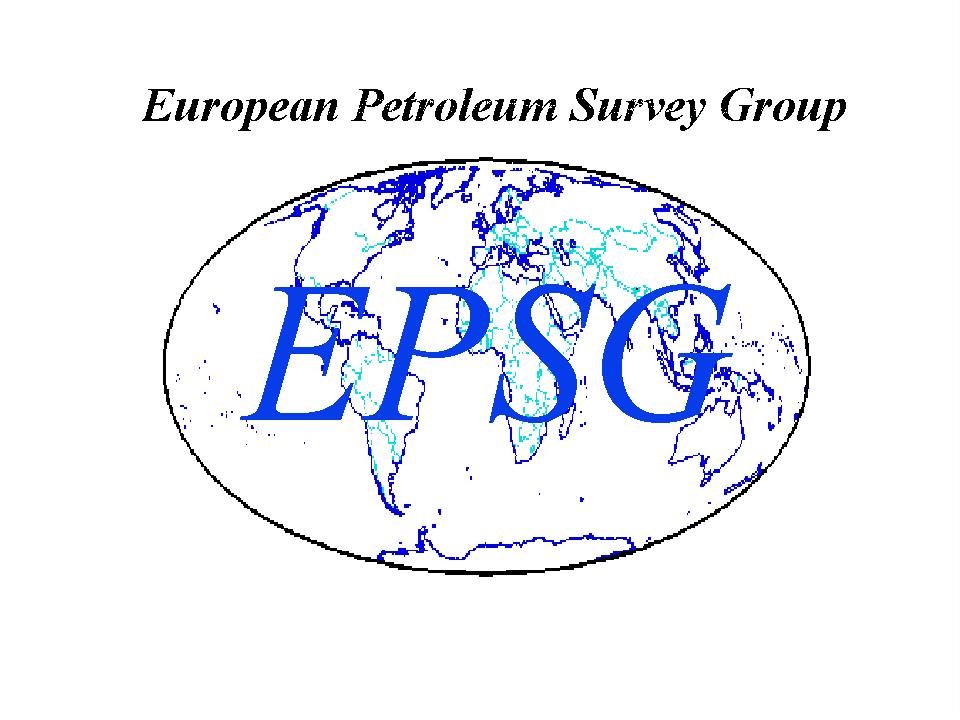
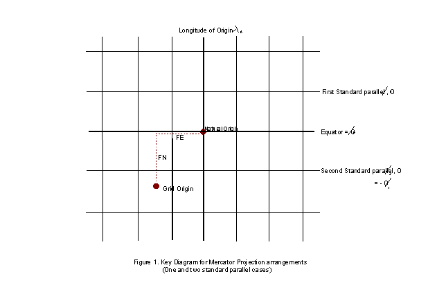
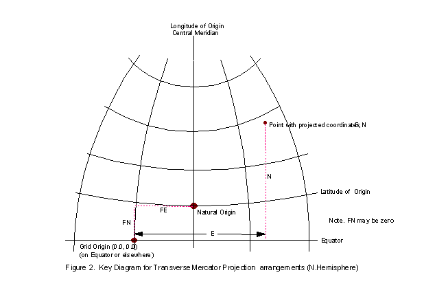
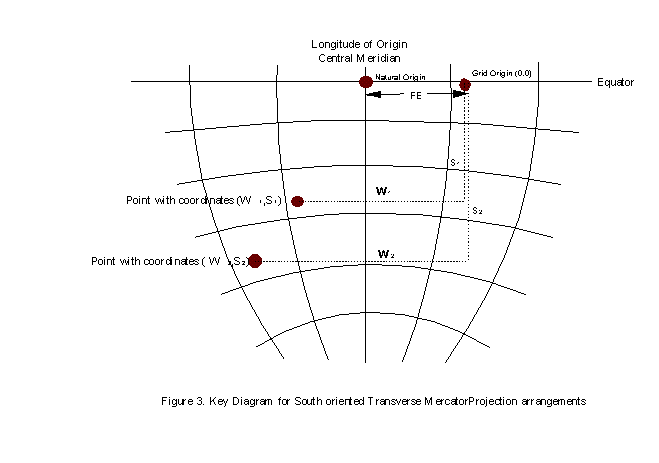
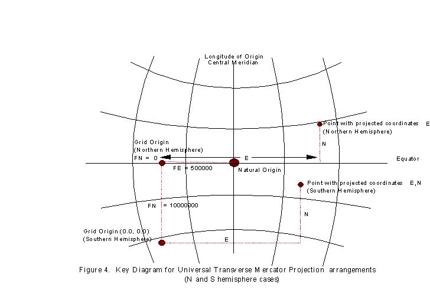
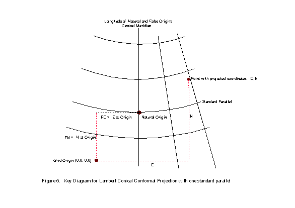
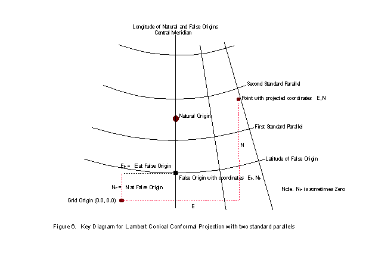
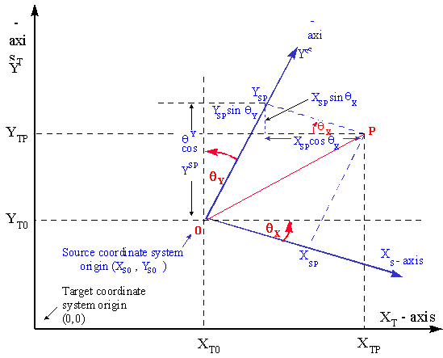
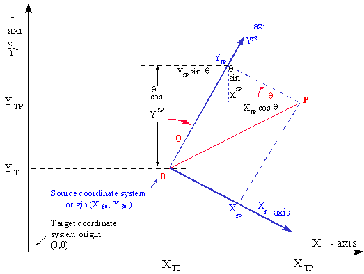

[This Guidance Note is available in its entirety below, but users are encouraged to download Guidance Note 7, in PDF format or in a MS Word 97-2000 & 6/95 - RTF format (zipped) for improved presentation.]

Guidance Note Number 7
POSC literature pertaining to
Coordinate Conversions and Transformations including Formulas
This information was compiled by EPSG members for the Petrotechnical Open Software Corporation (POSC). It is reproduced here with the permission of POSC.
Revision history:
|
Version |
Date |
Amendments |
|
1 |
First release – POSC Epicentre |
|
|
10 |
May 1998 |
Additionally issued as an EPSG guidance note. |
|
11 |
November 1998 |
Polynomial for Spain and Tunisia Mining Grid methods added. |
|
February 1999 |
Abridged Molodenski formulas corrected. |
|
|
July 1999 |
Lambert Conic Near Conformal and American Polyconic methods added. |
|
|
December 1999 |
Stereographic and Tunisia Mining Grid formulas corrected. Krovak method added. |
|
|
June 2000 |
General Polynomial and Affine methods added |
|
|
December 2000 |
Lambert Conformal (Belgium) remarks revised; Oblique Mercator methods consolidated and formulas added. Similarity Transformation reversibility remarks amended. |
|
|
June 2001 |
Lambert Conformal, Mercator and Helmert formulas corrected. |
|
|
August 2002 |
Revised to include ISO 19111 terminology. Section numbering revised. Added Preface. Lambert Conformal (West Orientated), Lambert Azimuthal, Albers, Equidistant Cylindrical (Plate Carrée), TM zoned, Bonne, Molodenski-Badedas methods added. Errors in Transverse Mercator (South Orientated) formula corrected. |
Index
Preface
Coordinate conversions and coordinate transformations.
1. Map Projections and their Coordinate Conversion Formulas
1.1 Introduction
1.2 Identification of Projected Coordinate Reference Systems
2. Formulas for Coordinate Operations other than Map Projections
Preface
A Coordinate System is set of mathematical rules for specifying how coordinates are to be assigned to points. This is unrelated to the Earth. A Coordinate Reference System is a Coordinate System related to the Earth through a Datum.
Coordinates may be changed from one Coordinate Reference System (CRS) to another through the application of a Coordinate Operation. Two types of Coordinate Operation may be distinguished:
A projected coordinate reference system is the result of the application of a Map Projection to a geographic coordinate reference system. A map projection is a type of coordinate conversion. It uses an identified method with specific formulas and a set of parameters specific to that coordinate conversion method.
Map Projection methods are described in part 1 below. Other Coordinate Conversions and Transformations are described in part 2.
Part 1. Map Projections and their Coordinate Conversion formulas
1.1 Introduction
Setting aside the large number of map projection methods which may be employed for atlas maps, equally small scale illustrative exploration maps, and wall maps of the world or continental areas, EPSG provides reference parameter values for orthomorphic or conformal map projections which are used for medium or large scale topographic or exploration mapping. Here accurate positions are important and sometimes users may wish to scale accurate positions, distances or areas from the maps.
Small scale maps normally assume a spherical earth and the inaccuracies inherent in this assumption are of no consequence at the usual scale of these maps. For medium and large scale sheet maps, or maps and map projection coordinates held digitally to a high accuracy, it is essential that due regard is paid to the actual shape of the earth. Such coordinate reference systems are therefore invariably based on an ellipsoid and its derived map projections. The EPSG data set and this supporting conversion documentation considers only map projections for the ellipsoid.
Though not exhaustive the following list of named map projection methods are those which are most frequently encountered for medium and large scale mapping, some of them much less frequently than others since they are designed to serve only one particular country. They are grouped according to their possession of similar properties, which will be explained later. Except where indicated all are conformal.
Mercator Cylindrical
with one standard parallel
with two standard parallels
Cassini-Soldner (N.B. not conformal) Transverse Cylindrical
Transverse Mercator Group
Transverse Mercator (including south oriented version) Transverse Cylindrical
Universal Transverse Mercator
Gauss-Kruger
Gauss-Boaga
Oblique Mercator Group
Hotine Oblique Mercator Oblique Cylindrical
Oblique Mercator
Laborde Oblique Mercator
New Zealand Map Grid (May also be considered as type of Oblique Stereographic)
Space Oblique Mercator (Not strictly conformal)
Lambert Conical Conformal
with one standard parallel Conical
with two standard parallels
one standard parallel with truncated formulas (n.b. not conformal)
Stereographic Azimuthal
Polar
Oblique and equatorial
1.2. Identification of Map Projection method
If a map or coordinate list is provided for which an EPSG listed coordinate reference system is clearly identifiable, then its name or identifier together with EPSG dataset version number will address the required parameters including the coordinate conversion parameter values. If the coordinate reference system is not listed it will be necessary to create a new coordinate reference system with its own coordinate conversion (parameter) values.
It may often happen that one is presented with a coordinate list or map for which the author or compiler has regrettably failed to provide any indication of parameter values or properties:- no projection name, no grid definition and no statement of ellipsoid or datum. On the map there may be no grid or graticule, or indeed neither.
In order to adequately relate the digital or displayed map data to other data it is necessary to establish the properties of the data or given map from what may be gleaned from their appearance and other information. Geographical coordinates without qualifying information do not allow identification of the coordinate reference system other than that it is a geographic one. Projected or map grid coordinates may, by virtue of the actual and relative magnitudes of the Easting and Northing and knowledge of where in the world they relate to, provide clues as to the map projection. For example eastings between say 150000m and 850000m, allied with 6 or 7 figure northings correlated with latitude may indicate a UTM.
If the map bears neither grid nor graticule it will be useless unless one can identify a number of the point features shown for which one already has coordinate data. One may then be able to superimpose and fit a rectangular grid at appropriate scale from which other coordinate data may be read. If the map carries a grid then the numerical labelling of the grid lines, the assumption that it will be conformal or orthomorphic, and prior knowledge of approximately where in the world it covers may give some indication of the type of projection, but this may not be totally definitive. If the map bears a graticule the nature of the graticule lines will give some indication of the type of projection used in its compilation. For example straight meridians and concentric parallels would suggest a conical projection or, less frequently, a polar azimuthal. If the former, and assuming that it will be orthomorphic, then it will either be with one standard parallel or two and these will have been selected in relation to the latitudinal extent of the area, very possibly those in general use for that state's mapping. If the parallels are equally spaced it will be a simple equidistant conical projection. However for large scale mapping purposes the requirement that it is conformal will dictate that the parallels will not be equally spaced and it is more than likely that it will be some form of Lambert projection with either one or two standard parallels. Unfortunately there is no easy way of detecting which, nor the values of the standard parallels. The country it comes from and its national mapping system, if known, may suggest what these are. The EPSG data set will assist but is not exhaustive.
If both meridians and parallels of latitude are straight it will be a cylindrical projection but of the normal and not the more frequent transverse or oblique variety (Figure 1 at end of section 1.3). Of the normal aspect cylindrical projections only the Mercator is conformal and it is not frequently used for topographic mapping though it is almost invariably used for the production of marine navigation charts.
If both parallels of latitude and meridians are curved the projection has numerous possibilities but a form of Transverse Mercator may well be the most likely. One may attempt to identify the projection by computing the grid values of some of the graticule intersections for several possible projections in turn, plotting these to a rounded value for the estimated scale of the map e.g. 1:50000 or 1:100000, and attempting to fit the overlaid grid plot on the graticule. Repeating this for a number of potential projections for the area may be successful in obtaining a reasonable fit. But bear in mind that paper stretch may slightly distort scale from the nominal scale of the map, and the scale factor used in the graticule to grid conversions is another variable which may take only slightly different values e.g. a Gauss-Kruger takes a central meridian scale factor of unity while a UTM (like Gauss-Kruger, a Transverse Mercator) takes 0.9996.
Digital cartographic techniques make it relatively easy to plot grid and graticule for different projections with different parameters onto transparencies for "trial and error" overlays. The process can be time consuming so it is preferable to make maximum use of the clues which one may infer from the appearance of the map as initially presented, - its origins, its national area, and the conventional projections used for that area.
1.3. Map Projection parameters
A map projection grid is related to the geographical graticule of an ellipsoid through the definition of a coordinate conversion method and a set of parameters appropriate to that method. Differing conversion methods may require different parameters. Any one coordinate conversion method may take several different sets of associated parameter values, each set related to a particular map projection zone applying to a particular country or area of the world. Before setting out the formulas involving these parameters, which enable the coordinate conversions for the projection methods listed above, it is as well to understand the nature of these parameters.
The plane of the map and the ellipsoid surface may be assumed to have one particular point in common. This point is referred to as the natural origin. It is the point from which the values of both the geographical coordinates on the ellipsoid and the grid coordinates on the projection are deemed to increment or decrement for computational purposes. Alternatively it may be considered as the point which in the absence of application of false coordinates has grid coordinates of (0,0). For example, for projected coordinate reference systems using the Cassini-Soldner or Transverse Mercator methods, the natural origin is at the intersection of a chosen parallel and the chosen central meridian (see Figure 2 at end of section). The chosen parallel will frequently but not necessarily be the equator. For the stereographic projection the origin is at the centre of the projection where the plane of the map is imagined to be tangential to the ellipsoid.
Since the natural origin may be at or near the centre of the projection and under normal coordinate circumstances would thus give rise to negative coordinates over parts of the map, this origin is usually given false coordinates which are large enough to avoid this inconvenience. Hence each natural origin will normally have False Easting, FE and False Northing, FN values. For example, the false easting for the origins of all Universal Transverse Mercator zones is 500000m. As the UTM origin lies on the equator, areas north of the equator do not need and are not given a false northing but for mapping southern hemisphere areas the equator origin is given a false northing of 10,000,000m, thus ensuring that no point in the southern hemisphere will take a negative northing coordinate. Figure 4 illustrates the UTM arrangements.
These arrangements suggest that if there are false easting and false northing for the real or natural origin, there is also a Grid Origin which has coordinates (0,0). In general this point is of no consequence though its geographic position may be computed if needed. Sometimes however, rather than base the easting and northing coordinate reference system on the natural origin by giving it FE and FN values, it may be convenient to select a False Origin at a specific meridian/parallel intersection and attribute the false coordinates (0,0) or, more usually, EF and NF to this. The related easting and northing of the natural origin may then be computed if required.
The natural origin will always lie on a meridian of longitude. Longitudes are most commonly expressed relative to the Prime Meridian of Greenwich but some countries, particularly in former times, have preferred to relate their longitudes to a prime meridian through their national astronomic observatory, usually sited in or near their capital city, e.g. Paris for France, Bogota for Colombia. The meridian of the projection zone origin is known as the Longitude of Origin. For certain projection types it is often termed the Central Meridian or abbreviated as CM and provides the direction of the northing axis of the projected coordinate reference system.
Because of the steadily increasing distortion in the scale of the map with increasing distance from the origin, central meridian or other line on which the scale is the nominal scale of the projection, it is usual to limit the extent of a projection to within a few degrees of latitude or longitude of this point or line. Thus, for example, a UTM or other Transverse Mercator projection zone will normally extend only 2 or 3 degrees from the central meridian. For areas beyond this another zone of the projection, with a new origin and central meridian, needs to be used or created. The UTM system has a specified 60 numbered zones, each 6 degrees wide, covering the ellipsoid between the 84 degree North and 80 degree South latitude parallels. Other Transverse Mercator projection zones may be constructed with different central meridians, and different origins chosen to suit the countries or states for which they are used. A number of these are included in the EPSG dataset. Similarly a Lambert Conic Conformal zone distorts most rapidly in the north-south direction and may, as in Texas, be divided into latitudinal bands.
In order to further limit the scale distortion within the coverage of the zone or projection area, some projections introduce a scale factor at the origin (on the central meridian for Transverse Mercator projections), which has the effect of reducing the nominal scale of the map here and making it have the nominal scale some distance away. For example in the case of the UTM and some other Transverse Mercator projections a scale factor of slightly less than unity is introduced on the central meridian thus making it unity on two meridians either side of the central one, and reducing its departure from unity beyond these. The scale factor is a required parameter whether or not it is unity and is usually symbolised as k0.
Thus for projections in the Transverse Mercator group in section 1.1 above, the parameters which are required to completely and unambiguously define the projected coordinate system are:
Latitude of the natural origin
Longitude of the natural origin
Scale factor at the natural origin
False Easting
False Northing
Since the UTM zones obey set rules, it is sufficient to state only the UTM zone number (or central meridian). The remaining parameters from the above list are defined by the rules.
It has been noted that the Transverse Mercator projection is employed for the topographical mapping of longitudinal bands of territories, limiting the amount of scale distortion by limiting the extent of the projection either side of the central meridian. Sometimes the shape, general trend and extent of some countries makes it preferable to apply a single zone of the same kind of projection but with its central line aligned with the trend of the territory concerned rather than with a meridian. So, instead of a meridian forming this true scale central line for one of the various forms of Transverse Mercator, or the equator forming the line for the Mercator, a line with a particular azimuth traversing the territory is chosen, and the same principles of construction are applied to derive what is now an Oblique Mercator. This projection is sometimes referred to as the Hotine Oblique Mercator after the British geodesist who set out its formulas for application to Malaysian Borneo (East Malaysia) and also West Malaysia. Laborde had previously developed the projection system for Madagascar, and Switzerland uses a similar system derived by Rosenmund.
More recently (1974) Lee has derived formulas for a minimum scale factor projection for New Zealand known as the New Zealand Map Grid. The line of minimum scale follows the general alignment of the two main islands. This resembles an Oblique Mercator projection in its effect, but is not strictly an Oblique Mercator. The additional mathematical complexity of the projection enables its derivation via an Oblique Stereographic projection, which is sometimes the way it is classified. Because of its unique formulation inclusion of the New Zealand Map Grid within international mapping software was sporadic; as a consequence New Zealand has reverted to the frequently-encountered Transverse Mercator for its most recent mapping.
The parameters required to define an Oblique Mercator projection are:
Latitude of projection centre (the origin point on the initial line)
Longitude of projection centre
Azimuth of initial line at the projection centre
Scale factor at projection centre
Angle from rectified to skewed grid at the natural origin
and then either
False Easting (easting at the projection natural origin)
False Northing (northing at the projection natural origin)
or
Easting at the projection centre
Northing at the projection centre
The angle from rectified to skewed grid is normally applied at the natural origin of the projection, that is where the initial line of the projection intersects the aposphere. In some circumstances, for instance in the Alaskan panhandle State Plane zone, this angle is taken to be identical to the azimuth of the initial line at the projection centre. This results in grid and true north coinciding at the projection centre rather than at the natural origin as is more usual.
It is possible to define the azimuth of the initial line through the latitude and longitude of two widely spaced points along that line. This approach is not currently followed by POSC/EPSG.
For Conical map projections, which for the normal aspect may be considered as the projection of the ellipsoid onto an enveloping cone in contact with the ellipsoid along a parallel of latitude, the parallel of contact is known as a standard parallel and the scale is regarded as true along this parallel. Sometimes the cone is imagined to cut the ellipsoid with coincidence of the two surfaces along two standard parallels. All other parallels will be concentric with the chosen standard parallel or parallels but for the Lambert Conical Conformal will have varying separations to preserve the conformal property. All meridians will radiate with equal angular separations from the centre of the parallel circles but will be compressed from the 360 longitude degrees of the ellipsoid to a sector whose angular extent depends on the chosen standard parallel, - or both standard parallels if there are two. Of course the normal longitudinal extent of the projection will depend on the extent of the territory to be projected and will never approach 360 degrees.
As in the case of the Transverse Mercator above it is sometimes desirable to limit the maximum positive scale distortion for the one standard parallel case by distributing it more evenly over the extent of the mapped area. This may be achieved by introducing a scale factor on the standard parallel of slightly less than unity thus making it unity on two parallels either side of it. This achieves the same effect as choosing two specific standard parallels in the first place, on which the nominal scale will be preserved. The projection is then a Lambert Conical Conformal projection with two standard parallels. Although, strictly speaking, the scale on a standard parallel is always the nominal scale of the map and the scale factor on the one or two standard parallels should be unity, it is sometimes convenient to consider a Lambert Conical Conformal projection with one standard parallel yet which has a scale factor on the standard parallel of less than unity. This provision is allowed for by POSC/EPSG, where the single standard parallel is referred to as the latitude of the natural origin. For an ellipsoidal projection the natural origin will fall slightly poleward of the mean of the latitudes of the two standard parallels.
A longitude of origin or central meridian will again be chosen to bisect the area of the map or, more usually, the total national map area for the country or state concerned. Where this cuts the one standard parallel will be the natural origin of the projected coordinate system and, as for the Transverse Mercator, it will be given a False Easting and False Northing to ensure that there are no negative coordinates within the projected area (see Figure 5). Where two standard parallels are specified a false origin may be chosen at the intersection of a specific parallel with the central meridian outside the mapped area. This point will be given easting at false origin and northing at false origin to ensure that no negative coordinates will result. Figure 6 illustrates these arrangements.
It is clear that any number of Lambert projection zones may be formed according to which standard parallel or standard parallels are chosen and this is clearly exemplified by those which are used for many of the United States State Plane coordinate zones. They are normally chosen either, for one standard parallel, to approximately bisect the latitudinal extent of the country or area or, for two standard parallels, to embrace most of the latitudinal extent of the area. In the latter case the aim is to minimise the maximum scale distortion which will affect the mapped area and various formulas have been developed by different mathematicians to select the appropriate standard parallels to achieve this. Kavraisky was one mathematician who derived a recipe for choosing the standard parallels to achieve minimal scale distortion. But however the selection of the standard parallels is made the same projection formulas apply. Thus the parameters needed to specify a projection in the Lambert projected coordinate system group will be as follows:
For a Lambert Conical Conformal with one standard parallel (1SP),
Latitude of the natural origin (the Standard Parallel)
Longitude of the natural origin (the Central Meridian)
Scale factor at the natural origin (on the Standard Parallel)
False Easting
False Northing
For a Lambert Conical Conformal with two standard parallels (2SP),
Latitude of the first standard parallel
Latitude of the second standard parallel
Latitude of the false origin
Longitude of the false origin (the Central Meridian)
Easting at the false origin
Northing at the false origin
where the order of the standard parallels is not material if using the formulas which follow.
The limiting case of the Lambert Conic Conformal having the apex of the cone at infinity produces a cylindrical projection, the Mercator. Here, for the single standard parallel case the latitude of natural origin is the equator. For the two standard parallel case the two parallels have equal latitude in the north and south hemispheres. In both one and two standard parallel cases, grid coordinates are for the natural origin at the intersection of the equator and the central meridian (see figure 1). Thus the parameters needed to specify a projection in the Mercator projected coordinate system group will be:
For a Mercator with one standard parallel (1SP),
Latitude of the natural origin (the Equator)
Longitude of the natural origin (the Central Meridian)
Scale factor at the natural origin (on the Equator)
False Easting
False Northing
For a Mercator with two standard parallels (2SP),
Latitude of the first standard parallel
Longitude of the natural origin (the Central Meridian)
False Easting (grid coordinate at the intersection of the CM with the equator)
False Northing
In the formulas that follow the absolute value of the first standard parallel must be used.
For Azimuthal map projections, which are only infrequently used for ellipsoidal topographic mapping purposes, the natural origin will be at the centre of the projection where the map plane is imagined to be tangential to the ellipsoid and which will lie at the centre of the area to be projected. The central meridian will pass through the natural origin. This point will be given a False Easting and False Northing.
The parameters needed to specify the Stereographic map projection are:
Latitude of natural origin
Longitude of natural origin (the central meridian for the oblique case)
Scale Factor at the natural origin
False Easting at the natural origin
False Northing at the natural origin






TABLE 1. Summary of Coordinate Operation Parameters required to specify Map Projections
|
Transformation Method |
Mercator (1SP) |
Mercator (2SP) |
Cassini-Soldner |
Transverse Mercator |
Hotine Oblique Mercator |
Oblique Mercator |
Lambert Conical (1 SP) |
Lambert Conical (2 SP) |
Oblique Stereo-graphic |
New Zealand Map Grid |
|
Latitude of natural origin |
(x) = equator |
x |
x |
x |
x |
x |
||||
|
Longitude of natural origin |
x |
x |
x |
x |
x |
x |
x |
|||
|
Scale Factor at natural origin |
x |
x |
x |
x |
||||||
|
False Easting |
x |
x |
x |
x |
x |
x |
|
x |
x |
|
|
False Northing |
x |
x |
x |
x |
x |
x |
x |
x |
||
|
Latitude of First Standard Parallel |
x |
x |
|
|||||||
|
Latitude of Second Standard Parallel |
x |
|||||||||
|
Latitude of false origin |
|
|
x |
|||||||
|
Longitude of false origin |
|
|
x |
|||||||
|
Easting at false origin |
x |
|||||||||
|
Northing at false origin |
x |
|||||||||
|
Easting at projection centre |
x |
|||||||||
|
Northing at projection centre |
x |
|||||||||
|
Latitude of projection centre |
x |
x |
||||||||
|
Longitude of projection centre |
x |
x |
||||||||
|
Scale factor at projection centre |
x |
x |
||||||||
|
Azimuth of initial line at projection centre |
x |
x |
||||||||
|
Angle from rectified to skewed grid |
x |
x |
1.4. Map Projection formulas
Only formulas for computation on the ellipsoid are considered. Projection formulas for the spherical earth are simpler but the spherical figure is inadequate to represent positional data with great accuracy at large map scales for the real earth. Projections of the sphere are only suitable for illustrative maps at scale of 1:1 million or less where precise positional definition is not critical.
The formulas which follow are largely adapted from "Map Projections - A Working Manual" by J.P.Snyder, published by the U.S. Geological Survey as Professional Paper No.1395. As well as providing an extensive overview of most map projections in current general use, and the formulas for their construction for both the spherical and ellipsoidal earth, this excellent publication provides computational hints and details of the accuracies attainable by the formulas. It is strongly recommended that all those who have to deal with map projections for medium and large scale mapping should follow its guidance.
There are a number of different formulas available in the literature for map projections other than those quoted by Snyder. Some are closed formulas; others, for ease of calculation, may depend on series expansions and their precision will generally depend on the number of terms used for computation. Generally those formulas which follow in this chapter will provide results which are accurate to within a decimetre, which is normally adequate for exploration mapping purposes. Coordinate expression and computations for engineering operations are usually consistently performed in grid terms.
The importance of one further variable should be noted. This is the unit of linear measurement used in the definition of projected coordinate systems. For metric map projections the unit of measurement is restricted to this unit. For non-metric map projections the metric ellipsoid semi-major axis needs to be converted to the projected coordinate system linear unit before use in the formulas below. The relevant ellipsoid is obtained through the datum part of the projected coordinate reference system.
In the formulas for map projections which follow, the basic ellipsoidal parameters are represented by symbols and derived as follows:
a is the ellipsoidal semi-major axis
b is the ellipsoidal semi-minor axis
f is the flattening of the ellipsoid where 1/f = a/(a - b)
e is the eccentricity of the ellipsoid where e2 = 2f - f2
e' is the second eccentricity where e'2 = e2 /(1 -e2)
r is the radius of curvature of the meridian at latitude j ,
where r = a(1 - e2)/(1 - e2sin2j )3/2
n is the radius of curvature on the prime vertical (i.e. perpendicular to the meridian) at
latitude j , where n = a /(1 - e2sin2j )1/2
j is the latitude of the point to be converted, positive if North and negative if South of the equator
l is the longitude of the point to be converted, positive if East and negative if West of the prime meridian
j 0 is the latitude of the natural origin
l 0 is the longitude of the natural origin (with respect to the prime meridian)
j F is the latitude of the false origin
l F is the longitude of the false origin (with respect to the prime meridian)
j 1 is the latitude of first standard parallel
j 2 is the latitude of second standard parallel
k0 is the scale factor at the natural origin
E is the Easting measured from the grid origin
N is the Northing measured from the grid origin
FE is the false easting, the Eastings value assigned to the natural origin
FN is the false northing, the Northings value assigned to the natural origin
EF is the Eastings value assigned to the false origin
NF is the Northings value assigned to the false origin
EC is the Eastings value assigned to the projection centre
NC is the Northings value assigned to the projection centre
(Note that the origin of most map projections is given false coordinates to avoid negative coordinates. In the formulas which follow these values, (FE and FN or EF and NF or EC and NC) are included where appropriate so that the projected coordinates of points result directly from the quoted formulas).
Reversibility
Different formulas are require for forward and reverse map projection conversions: the forward formula cannot be used for the reverse conversion. However both forward and reverse formulas are explicitly given in the sections below as parts of a single conversion method. As such, map projection methods are described by EPSG as being reversible. Forward and reverse formulas for each conversion method use the projection parameters appropriate to that method with parameter values unchanged.
1.4.1. Lambert Conic Conformal
For territories with limited latitudinal extent but wide longitudinal width it may sometimes be preferred to use a single projection rather than several bands or zones of a Transverse Mercator. The Lambert Conic Conformal may often be adopted in these circumstances. But if the latitudinal extent is also large there may still be a need to use two or more zones if the scale distortion at the extremities of the one zone becomes too large to be tolerable.
Conical projections with one standard parallel are normally considered to maintain the nominal map scale along the parallel of latitude which is the line of contact between the imagined cone and the ellipsoid. For a one standard parallel Lambert the natural origin of the projected coordinate system is the intersection of the standard parallel with the longitude of origin (central meridian). See Figure 5 at end of section 1.3. To maintain the conformal property the spacing of the parallels is variable and increases with increasing distance from the standard parallel, while the meridians are all straight lines radiating from a point on the prolongation of the ellipsoid's minor axis.
Sometimes however, although a one standard parallel Lambert is normally considered to have unity scale factor on the standard parallel, a scale factor of slightly less than unity is introduced on this parallel. This is a regular feature of the mapping of some former French territories and has the effect of making the scale factor unity on two other parallels either side of the standard parallel. The projection thus, strictly speaking, becomes a Lambert Conic Conformal projection with two standard parallels. From the one standard parallel and its scale factor it is possible to derive the equivalent two standard parallels and then treat the projection as a two standard parallel Lambert conical conformal, but this procedure is seldom adopted. Since the two parallels obtained in this way will generally not have integer values of degrees or degrees minutes and seconds it is instead usually preferred to select two specific parallels on which the scale factor is to be unity, as for several State Plane Coordinate systems in the United States.
The choice of the two standard parallels will usually be made according to the latitudinal extent of the area which it is wished to map, the parallels usually being chosen so that they each lie a proportion inboard of the north and south margins of the mapped area. Various schemes and formulas have been developed to make this selection such that the maximum scale distortion within the mapped area is minimised, e.g. Kavraisky in 1934, but whatever two standard parallels are adopted the formulas are the same.
1.4.1.1 Lambert Conic Conformal (2SP) (EPSG coordinate operation method code 9802)
To derive the projected Easting and Northing coordinates of a point with geographical coordinates (j ,l ) the formulas for the Lambert Conic Conformal two standard parallel case (EPSG coordinate operation method code 9802) are:
Easting, E = EF + r sin q
Northing, N = NF + rF – r cos q
where m = cosj /(1 – e2sin2j )1/2 for m1, j 1, and m2, j 2 where j 1 and j 2 are the latitudes of the standard parallels
t = tan(p /4 – j /2)/[(1 – e sinj )/(1 + e sinj )]e/2 for t1, t2, tF and t using j 1,j 2,j F and j respectively
n = (ln m1 – ln m2)/(ln t1 – ln t2)
F = m1/(nt1n)
r = a F tn for rF and r, where rF is the radius of the parallel of latitude of the false origin
q = n(l – l 0)
The reverse formulas to derive the latitude and longitude of a point from its Easting and Northing values are:
j = p /2 – 2arctan{t'[(1 – esinj )/(1 + esinj )]e/2}
l = q '/n +l 0
where
r' = ± {(E – EF)2 + [rF – (N – NF)]2}1/2 , taking the sign of n
t' = (r'/(aF))1/n
q ' = arctan [(E – EF)/(rF – (N – NF))]
and n, F, and rF are derived as for the forward calculation.
Note that the formula for j requires iteration. First calculate t' and then a trial value for j using
j = π/2-2arctan t'. Then use the full equation for j substituting the trial value into the right hand side of the equation. Thus derive a new value for j . Iterate the process until j does not change significantly. The solution should quickly converge, in 3 or 4 iterations.
Example:
For Projected Coordinate Reference System NAD27 / Texas South Central
Parameters:
Ellipsoid Clarke 1866 a = 6378206.400 metres = 20925832.16 US survey feet 1/f = 294.97870
then e = 0.08227185, e2 = 0.00676866
First Standard Parallel j 1 28o23'00"N = 0.49538262 rad
Second Standard Parallel j 2 30o17'00"N = 0.52854388 rad
Latitude False Origin j F 27o50'00"N = 0.48578331 rad
Longitude False Origin l F 99o00'00"W = -1.72787596 rad
Easting at false origin EF 2000000.00 US survey feet
Northing at false origin NF 0.00 US survey feet
Forward calculation for:
Latitude j 28o30'00.00"N = 0.49741884 rad
Longitude l 96o00'00.00"W = -1.67551608 rad
first gives :
m1 = 0.88046050 m2 = 0.86428642
t = 0.59686306 tF = 0.60475101
t1 = 0.59823957 t2 = 0.57602212
n = 0.48991263 F = 2.31154807
r = 37565039.86 rF = 37807441.20
q = 0.02565177
Then Easting E = 2963503.91 US survey feet
Northing N = 254759.80 US survey feet
Reverse calculation for same easting and northing first gives:
q ' = 0.025651765 r' = 37565039.86
t' = 0.59686306
Then Latitude j = 28o30'00.000"N
Longitude l = 96o00'00.000"W
1.4.1.2 Lambert Conic Conformal (1SP) (EPSG coordinate operation method code 9801)
The formulas for the two standard parallel can be used for the Lambert Conic Conformal single standard parallel case (EPSG coordinate operation method code 9801) with minor modifications. Then
E = FE + r sinq
N = FN + r0 - r cosq , using the natural origin rather than the false origin.
where
n = sin j 0
r = aFtn k0 for r0, and r
t is found for t0, j 0 and t, j and m, F, and q are found as for the two standard parallel case.
The reverse formulas for j and l are as for the two standard parallel case above, with n, F and r0 as before and
q ' = arctan{(E – FE)/[r0 – (N – FN)]}
r' = ± {(E – FE)2 + [r0 – (N – FN)]2}1/2
t' = (r'/(ak0F))1/n
Example:
For Projected Coordinate Reference System JAD69 / Jamaica National Grid
Parameters:
Ellipsoid Clarke 1866 a = 6378206.400 m 1/f = 294.97870
then e = 0.08227185, e2 = 0.00676866
Latitude Natural Origin j o 18o 00'00" N = 0.31415927 rad
Longitude Natural Origin l o 77o 00'00" W = -1.34390352 rad
Scale factor at origin ko 1.000000
False Eastings FE 250000.00 m
False Northings FN 150000.00 m
Forward calculation for:
Latitude j = 17o 55' 55.80" N = 0.31297535 rad
Longitude l = 76o 56' 37.26" W = -1.34292061 rad
first gives
m0 = 0.95136402 t0 = 0.72806411
F = 3.39591092 n = 0.30901699
r = 19643955.26 r0 = 19636447.86
q = 0.00030374 t = 0.728965259
Then Easting E = 255966.58 m
Northing N = 142493.51 m
Reverse calculation for the same easting and northing first gives
q ' = 0.000303736
t' = 0.728965259
m0 = 0.95136402
r' = 19643955.26
Then Latitude j = 17o 55' 55.800" N
Longitude l = 76o 56' 37.260" W
1.4.1.3 Lambert Conic Conformal (West Orientated) (EPSG coordinate operation method code 9826)
In older mapping of Denmark and Greenland the Lambert Conic Conformal is used with axes positive north and west. To derive the projected Westing and Northing coordinates of a point with geographical coordinates (j , l ) the formulas are as for the standard Lambert Conic Conformal (1SP) case above (EPSG coordinate operation method code 9801) except for:
W = FE – r.sin(q )
In this formula the term FE retains its definition, i.e. in the Lambert Conic Conformal (West Orientated) method it increases the Westing value at the natural origin. In this method it is effectively false westing (FW).
The reverse formulas to derive the latitude and longitude of a point from its Westing and Northing values are as for the standard Lambert Conic Conformal (1SP) case except for:
q ' = arctan[(FE – W)/{r0 – (N – FN)}]
r' = +/-[(FE – W)2 + {r0 – (N – FN)}2]0.5
1.4.1.4 Lambert Conic Conformal (2 SP Belgium) (EPSG coordinate operation method code 9803)
In 1972, in order to retain approximately the same grid coordinates after a change of geodetic datum, a modified form of the two standard parallel case was introduced in Belgium. The formulas for the regular Lambert Conic Conformal (2SP) case given above are used except for:
Easting, E = EF + r sin (q – a)
Northing, N = NF + rF - r cos (q – a)
and for the reverse formulas
l = [(q ' + a)/n] + l 0
where a = 29.2985 seconds.
In 2000 this modification was replaced through use of the regular Lambert Conic Conformal (2 SP) map projection with appropriately modified parameter values.
Example:
For Projected Coordinate Reference System Belge l972 / Belge Lambert 72
Parameters:
Ellipsoid International 1924 a = 6378388 metres
1/f = 297
then e = 0.08199189, e2 = 0.006722670
First Standard Parallel j 1 49o50'00"N = 0.86975574 rad
Second Standard Parallel j 2 51o10'00"N = 0.89302680 rad
Latitude False Origin j F 90o00'00"N = 1.57079633 rad
Longitude False Origin l F 4o21'24.983"E = 0.07604294 rad
Easting at false origin EF 150000.01 metres
Northing at false origin NF 5400088.44 metres
Forward calculation for:
Latitude j = 50o40'46.4610"N = 0.88452540 rad
Longitude l = 5o48'26.533"E = 0.10135773 rad
first gives :
m1 = 0.64628304 m2 = 0.62834001
t = 0.59686306 tF = 0.00000000
t1 = 0.36750382 t2 = 0.35433583
n = 0.77164219 F = 1.81329763
r = 37565039.86 rF = 0.00
a= 0.00014204 q = 0.01953396
Then Easting E = 251763.20 metres
Northing N = 153034.13 metres
Reverse calculation for same easting and northing first gives:
q ' = 0.01939192 r' = 548041.03
t' = 0.35913403
Then Latitude j = 50o40'46.4610"N
Longitude l = 5o48'26.533"E
1.4.2. Lambert Conic Near-Conformal (EPSG coordinate operation method code 9817)
The Lambert Conformal Conic with one standard parallel formulas, as published by the Army Map Service, are still in use in several countries. The AMS uses series expansion formulas for ease of computation, as was normal before the electronic computer made such approximate methods unnecessary. Where the expansion series have been carried to enough terms the results are the same as the above formulas to the centimetre level. However in some countries the expansion formulas were truncated to the third order and the map projection is not fully conformal. The full formulas are used in Libya but from 1915 for France, Morocco, Algeria, Tunisia and Syria the truncated formulas were used. In 1943 in Algeria and Tunisia, from 1948 in France, from 1953 in Morocco and from 1973 in Syria the truncated formulas were replaced with the full formulas.
To compute the Lambert Conic Near-Conformal the following formulas are used:
E = FE + r sinq
N = FN + M + r sinq tan (q / 2) using the natural origin rather than the false origin.
Compute constants for the ellipse:
n = (a – b)/(a+b)
A' = a [ 1– n + 5 (n2 – n3 ) / 4 + 81 ( n4 – n5 ) / 64]*p /180
B' = 3 a [ n – n2 + 7 ( n3 – n4 ) / 8 + 55 n5 / 64] / 2
C' = 15 a [ n2 – n3 + 3 ( n4 – n5 ) / 4 ] / 16
D' = 35 a [ n3 – n4 + 11 n5 / 16 ] / 48
E' = 315 a [ n4 – n5 ] / 512
Then compute the meridional arc from the equator to the parallel.
so = A' j o – B' sin 2j o + C' sin 4j o – D' sin 6j o + E' sin 8j o, where j o in the first term is in degrees
s = A' j – B' sin 2j + C' sin 4j – D' sin 6j + E' sin 8j , where j in the first term is in degrees
m = s – so
A = 1 / (6 r o n o)
M = ko ( m + Am3 + Bm4+ Cm5+ Dm6 ) This is the term that is truncated to the third order.
MS = M per second of arc = M / ((j – j o) * 3600)
q = (l – l 0) sin j o
ro = ko n o / tan j o
r = ro – M
The reverse formulas for j and l from E and N with ro and MS as above:
j = M’/ (MS *3600) + j o where j o and j are in degrees
l = l 0 + q ‘ / sin j o where l o and l are in radians
where
X = E – FE Y = N – FN
q ' = arctan [X / (ro – Y)]
r' = X / sin q '
M' = r' – ro
Example:
For Projected Coordinate Reference System: Deir ez Zor / Levant Zone
Parameters:
Ellipsoid Clarke 1880 (IGN) a = 6378249.2 m 1/f = 293.46602
then b = 6356515.000 n = 0.001706682563
Latitude Natural Origin j o 34o 39'00" N = 0.604756586 rad
Longitude Natural Origin l o 37o 21'00" E = 0.651880476 rad
Scale factor at origin ko 0.99962560
False Eastings FE 300000.00 m
False Northings FN 300000.00 m
Forward calculation for:
Latitude j 37o 31' 17.625" N = 0.654874806 rad
Longitude l 34o 08' 11.291" E = 0.595793792 rad
first gives
A = 4.1067494 * 10-15 A' =111131.8633
B' = 16300.64407 C' = 17.38751 D' = 0.02308 E' = 0.000033
so = 3835482.233 s = 4154101.458 m = 318619.225
M = 318632.72 MS = 30.82262319
q = -0.03188875 ro = 9235264.405 r = 8916631.685
Then Easting E = 15707.96 m (c.f. E = 15708.00 using full formulas)
Northing N = 623165.96 m (c.f. N = 623167.20 using full formulas)
Reverse calculation for the same easting and northing first gives
q ' = -0.03188875
r' = 8916631.685
M' = 318632.72
Latitude j = 0.654874806 rad = 37o 31' 17.625" N
Longitude l = 0.595793792 rad = 34o 08' 11.291" E
1.4.3. Krovak Oblique Conformal Conic (EPSG coordinate operation method code 9819)
The normal case of the Lambert Conformal conic is for the axis of the cone to be coincident with the minor axis of the ellipsoid, that is the axis of the cone is normal to the ellipsoid at a geographic pole. For the Oblique Conformal Conic the axis of the cone is normal to the ellipsoid at a defined location and its extension cuts the minor axis at a defined angle. This map projection is used in the Czech Republic and Slovakia under the name ‘Krovak’ projection. The map projection method is similar in principle to the Oblique Mercator (see section 1.4.5). The geographic coordinates on the ellipsoid are first reduced to conformal coordinates on the conformal (Gaussian) sphere. These spherical coordinates are then projected onto the oblique cone and converted to grid coordinates. The pseudo standard parallel is defined on the conformal sphere after its rotation, to obtain the oblique aspect of the projection. It is then the parallel on this sphere at which the map projection is true to scale; on the ellipsoid it maps as a complex curve. A scale factor may be applied to the map projection to increase the useful area of coverage.
The defining parameters for the Krovak oblique conformal conic map projection are:
j c = latitude of centre of the projection
l c = longitude of centre of the projection
a c = azimuth (true) of the centre line passing through the centre of the projection
= co-latitude of the cone axis at point of intersection with the ellipsoid
j 1 = latitude of pseudo standard parallel
kc = scale factor on the pseudo standard parallel
Ec = False Easting of the centre of the projection at the apex of the cone
Nc = False Northing of the centre of the projection at the apex of the cone
From these the following constants for the projection may be calculated :
B = ((1 + e2 cos4(j c)) / (1 – e2 ))0.5
A = a (1 – e2 )0.5 / ( 1 – e2 sin2 (j c))
g 0 = asin(sin (j c) / B)
t0 = tan(p / 4 + g 0/ 2) . ((1 + e sin (j c)) / (1 – e sin (j c)))e.B/2 / tan(p / 4 + j c/ 2) B
n = sin j 1
r0 = kc A / tan (j 1)
To derive the projected Easting and Northing coordinates of a point with geographical coordinates (j ,l ) the formulas for the oblique conic conformal are:
Easting: E = Ec + r cos q
Northing: N = Nc + r sinq
where
U = 2 (atan ( k tanB(j / 2 + p / 4 ) ((1 + e sin (j )) / (1 – e sin (j )))e.B/2 ) – p / 4)
V = B (l c – l )
S = asin ( cos (a c) sin ( U ) + sin (a c) cos (U) cos (V) )
D = asin ( cos ( U ) sin ( V ) / cos ( S ) )
q = n D
r = r0 tan(p / 4 + g 0/ 2) / tan n ( S/2 + p / 4 )
Note that the terms Easting and Northing here refer to the two map grid ordinates. Their actual geographic direction depends upon the azimuth of the centre line.
The reverse formulas to derive the latitude and longitude of a point from its Easting and Northing values are:
j j = 2*(atan(k-1/ B tan 1/ B ( U’/2 + p / 4 ) ((1 + e sin ( j j-1) / ( 1 – e sin ( j j-1)) e/2 ) – p / 4)
where j = 1,2 and the latitude is found by iteration.
l = l c– V’ / B
where
r' = [(E – EF)2 + (N – NF)2]1/2
q ' = arctan [(E – Ec)/(N – Nc)]
D' = q ' / sin ( j 1)
S' = 2*(atan((r0 / r )1/n tan(p / 4 + j 0/ 2)) - p / 4)
U' = asin ( cos (a c) sin (S') – sin (a c) cos (S') cos (D') )
V' = asin ( cos (S') sin (D') / cos (U'))
Example:
For Projected Coordinate Reference System: S-JTSK (Ferro) / Krovak
N.B. Krovak projection uses Ferro as the prime meridian. This has a longitude with reference to Greenwich of 17 deg 40 min West. To apply the formulas the defining longitudes must be corrected to the Greenwich meridian.
Parameters:
Ellipsoid Bessel 1841 a = 6377397.155m 1/f = 299.15281
then e = 0.081696831 e2 = 0.006674372
Latitude of projection centre (j c) 49o 30'00" N = 0.604756586 rad
Longitude of Origin 42o 30'00" East of Ferro
Longitude of Ferro is 17o 40'00" West of Greenwich
Longitude of Origin (l c) 24o 50'00" East of Greenwich = 0.433423431 rad
Latitude of pseudo standard parallel (j 1) 78o 30'00" N
Azimuth of centre line (a c) 30o 17' 17.303"
Scale factor on pseudo standard parallel (ko) 0.99990
Easting at projection centre (Ec) 0.00 m
Northing at projection centre (Nc) 0.00 m
Projection constants:
B = 1.000597498
A = 6380703.61
g 0 = 0.863239103
t0 = 1.003419164
n = 0.979924705
r0 = 1298039.005
Forward calculation for:
Latitude j 50o 12' 32.4416" N = 0.876312566 rad
Longitude l 16o 50' 59.1790" E = 0.294083999 rad
Gives
U = 0.875596949
V = 0.139422687
S = 1.386275049
D = 0.506554623
q = 0.496385389
r = 1194731.014
Then "Easting" E = 1050538.643 m
"Northing" N = 568990.997 m
where "Easting" increases southwards and "Northing" increases westwards.
Reverse calculation for the same "Easting" and "Northing" gives
r' = 1194731.014
q ' = 0.496385389
D' = 0.506554623
S' = 1.386275049
U' = 0.875596949
V' = 0.139422687
j 1 = 0.876310601
j 2 = 0.876312560
j 3 = 0.876312566
Latitude j = 0.876312566 rad = 50o 12' 32.4416" N
Longitude l = 0.595793792 rad = 16o 50' 59.1790" E
1.4.4. Mercator (EPSG coordinate operation method codes 9804 and 9805)
The Mercator map projection is a special limiting case of the Lambert Conic Conformal map projection with the equator as the single standard parallel. All other parallels of latitude are straight lines and the meridians are also straight lines at right angles to the equator, equally spaced. It is the basis for the transverse and oblique forms of the projection. It is little used for land mapping purposes but is in almost universal use for navigation charts. As well as being conformal, it has the particular property that straight lines drawn on it are lines of constant bearing. Thus navigators may derive their course from the angle the straight course line makes with the meridians.
In the few cases in which the Mercator projection is used for terrestrial applications or land mapping, such as in Indonesia prior to the introduction of the Universal Transverse Mercator, a scale factor may be applied to the projection. This has the same effect as choosing two standard parallels on which the true scale is maintained at equal north and south latitudes either side of the equator.
The formulas to derive projected Easting and Northing coordinates are:
For the two standard parallel case, k0 is first calculated from
k0 = cosj 1/(1 – e2sin2j 1)1/2
where j 1 is the absolute value of the first standard parallel (i.e. positive).
Then, for both one and two standard parallel cases,
E = FE + ak0(l – l 0)
N = FN + ak0 ln{tan(p /4 + j /2)[(1 – esinj )/(1 + esinj )]e/2 }
where symbols are as listed above and logarithms are natural.
The reverse formulas to derive latitude and longitude from E and N values are:
j = c + (e2/2 + 5e4/24 + e6/12 + 13e8/360) sin(2c )
+ (7e4/48 + 29e6/240 + 811e8/11520) sin(4c )
+ (7e6/120 + 81e8/1120) sin(6c ) + (4279e8/161280) sin(8c )
where c = p /2 – 2 arctan t
t = B (FN-N)/(ak0)
B = base of the natural logarithm, 2.7182818...
and for the 2 SP Case, k0 is calculated as for the forward transformation above.
l = [(E – FE)/ak0] + l 0
Examples
1. Mercator (with two standard parallels) (EPSG coordinate operation method code 9805)
For Projected Coordinate Reference System Pulkovo 1942 / Mercator Caspian Sea
Parameters:
Ellipsoid Krassowski 1940 a = 6378245.00m 1/f = 298.300
then e = 0.08181333, e2 = 0.00669342
Latitude first SP j 0 42o00'00"N = 0.73303829 rad
Longitude Natural Origin l 0 51o00'00"E = 0.89011792 rad
False Eastings FE 0.00 m
False Northings (at equator) FN 0.00 m
then natural origin at latitude of 0oN has scale factor k0= 0.74426089
Forward calculation for:
Latitude j 53o00'00.00"N = 0.9250245 rad
Longitude l 53o00'00.00"E = 0.9250245 rad
gives Easting E = 165704.29 m
Northing N = 5171848.07 m
Reverse calculation for same easting and northing first gives :
t = 0.33639129
c = 0.92179596
Then Latitude j = 53o00'00.000"N
Longitude l = 53o00'00.000"E
2. Mercator (with the equator as standard parallel) (EPSG coordinate operation method code 9804)
For Projected Coordinate Reference System Makassar / NEIEZ
Parameters:
Ellipsoid Bessel 1841 a = 6377397.155 m 1/f = 299.15281
then e = 0.08169683
Latitude Natural Origin j o 00o00'00"N = 0.0000000 rad
Longitude Natural Origin l o 110o00'00"E = 1.91986218 rad
Scale factor ko 0.997
False Eastings FE 3900000.00 m
False Northings FE 900000.00 m
Forward calculation for:
Latitude j = 3o00'00.00"S = -0.05235988 rad
Longitude l = 120o00'00.00"E = 2.09439510 rad
gives
Easting E = 5009726.58 m
Northing N = 569150.82 m
Reverse calculation for same easting and northing first gives :
t = 1.0534121
c = -0.0520110
Then Latitude j = 3o00'00.000"S
Longitude l = 120o00'00.000"E
1.4.5. Cassini-Soldner (EPSG coordinate operation method code 9806)
The Cassini-Soldner projection is the ellipsoidal version of the Cassini projection for the sphere. It is not conformal but as it is relatively simple to construct it was extensively used in the last century and is still useful for mapping areas with limited longitudinal extent. It has now largely been replaced by the conformal Transverse Mercator which it resembles. Like this, it has a straight central meridian along which the scale is true, all other meridians and parallels are curved, and the scale distortion increases rapidly with increasing distance from the central meridian.
The formulas to derive projected Easting and Northing coordinates are:
Easting, E = FE + n [A – TA3/6 – (8 – T + 8C)TA5/120]
Northing, N = FN + M – M0 + n tanj [A2/2 + (5 – T + 6C)A4/24]
where A = (l – l 0)cosj
T = tan2j
C = e2 cos2j /(1 - e2)
n = a /(1 – e2sin2j )1/2
and M, the distance along the meridian from equator to latitude j , is given by
M = a[1 – e2/4 – 3e4/64 – 5e6/256 –....)j – (3e2/8 + 3e4/32 + 45e6/1024 +....)sin2j
+ (15e4/256 + 45e6/1024 +.....)sin4j – (35e6/3072 + ....)sin6j + .....]
with j in radians.
M0 is the value of M calculated for the latitude of the chosen origin. This may not necessarily be chosen as the equator.
To compute latitude and longitude from Easting and Northing the reverse formulas are:
j = j 1 – (n 1tanj 1/r 1)[D2/2 – (1 + 3T1)D4/24]
l = l 0 + [D – T1D3/3 + (1 + 3T1)T1D5/15]/cosj 1
where
n 1 = a /(1 – e2sin2j 1)1/2
r 1 = a(1 – e2)/(1 – e2sin2j 1)3/2
j 1 is the latitude of the point on the central meridian which has the same Northing as the point whose coordinates are sought, and is found from:
j 1 = m 1 + (3e1/2 – 27e13/32 +.....)sin2m 1 + (21e12/16 – 55e14/32 + ....)sin4m 1
+ (151e13/96 +.....)sin6m 1 + (1097e14/512 – ....)sin8m 1 + ......
where
e1 = [1 – (1 – e2)1/2]/[1 + (1 – e2)1/2]
m 1 = M1/[a(1 – e2/4 – 3e4/64 – 5e6/256 – ....)]
M1 = M0 + (N – FN)
T1 = tan2j 1
D = (E – FE)/n 1
Example
For Projected Coordinate Reference System Trinidad 1903 / Trinidad Grid
Parameters:
Ellipsoid Clarke 1858 a = 20926348 ft = 31706587.88 links
b = 20855233 ft
then 1/f = 294.97870, e2 = 0.00676866
Latitude of natural origin j 0 10o26'30"N = 0.182241463 rad
Longitude of natural origin l 0 61o20'00"W = -1.07046861 rad
False Eastings FE 430000.00 links
False Northings FN 325000.00 links
Forward calculation for:
Latitude j 10o00'00.00" N = 0.17453293 rad
Longitude l 62o00'00.00"W = – 1.08210414 rad
A = -0.01145876 C = 0.00662550
T = 0.03109120 M = 5496860.24
n = 31709831.92 M0 = 5739691.12
Then Easting E = 66644.94 links
Northing N = 82536.22 links
Reverse calculation for same easting and northing first gives :
e1 = 0.00170207 D = -0.01145875
T1 = 0.03109544 M1 = 5497227.34
n 1 = 31709832.34 m 1 = 0.17367306
j 1 = 0.17454458 r 1 = 31501122.40
Then Latitude j = 10o00'00.000"N
Longitude l = 62o00'00.000"W
1.4.6. Transverse Mercator
1.4.6.1 General Case (EPSG coordinate operation method code 9807)
The Transverse Mercator projection in its various forms is the most widely used projected coordinate system for world topographical and offshore mapping. All versions have the same basic characteristics and formulas. The differences which distinguish the different forms of the projection which are applied in different countries arise from variations in the choice of values for the the coordinate conversion parameters, namely the latitude of the natural origin, the longitude of the natural origin (central meridian), the scale factor at the natural origin (on the central meridian), and the values of False Easting and False Northing, which embody the units of measurement, given to the origin. Additionally there are variations in the width of the longitudinal zones for the projections used in different territories.
The following table indicates the variations in the coordinate conversion parameters which distinguish the different forms of the Transverse Mercator projection and are used in the EPSG Transverse Mercator map projection operations:
TABLE 2
Transverse Mercator
|
Coordinate Operation Method Name |
Areas used |
Central meridian |
Latitude of natural origin |
CM Scale Factor |
Zone width |
False Easting |
False Northing |
|
Transverse Mercator |
Various, world wide |
Various |
Various |
Various |
Usually less than 6° |
Various |
Various |
|
Transverse Mercator south oriented |
Southern Africa |
2° intervals E of 11° E |
0° |
1.000000 |
2° |
0m |
0m |
|
UTM North hemisphere |
World wide equator to 84° N |
6° intervals E & W of 3° E & W |
Always 0° |
Always 0.9996 |
Always 6° |
500000m |
0m |
|
UTM South hemisphere |
World wide north of 80° S to equator |
6° intervals E & W of 3° E & W |
Always 0° |
Always 0.9996 |
Always 6° |
500000m |
10000000m |
|
Gauss-Kruger |
Former USSR, Yugoslavia, Germany, S. America, China |
Various, according to area of cover |
Usually 0° |
Usually 1.000000 |
Usually less than 6° , often less than 4° |
Various but often 500000 prefixed by zone number |
Various |
|
Gauss Boaga |
Italy |
Various |
Various |
0.9996 |
6° |
Various |
0m |
The most familiar and commonly used Transverse Mercator in the oil industry is the Universal Transverse Mercator (UTM) whose natural origin lies on the equator. However, some territories use a Transverse Mercator with a natural origin at a latitude of natural origin closer to that territory.
In EPSG the coordinate conversion method is considered to be the same for all forms of the Transverse Mercator projection. The formulas to derive the projected Easting and Northing coordinates for the normal case (EPSG coordinate operation method code 9807) are in the form of a series as follows:
Easting, E = FE + k0n [A + (1 – T + C)A3/6 + (5 – 18T + T2 + 72C – 58e'2)A5/120]
Northing, N = FN + k0{M – M0 + n tanj [A2/2 + (5 – T + 9C + 4C2)A4/24 +
(61 – 58T + T2 + 600C – 330e'2)A6/720]}
where T = tan2j
C = e2 cos2j /(1 – e2)
A = (l – l 0)cosj , with l and l 0 in radians
n = a /(1 – e2sin2j )1/2
M = a[(1 – e2/4 – 3e4/64 – 5e6/256 –....)j – (3e2/8 + 3e4/32 + 45e6/1024+....)sin2j
+ (15e4/256 + 45e6/1024 +.....)sin4j – (35e6/3072 + ....)sin6j + .....]
with j in radians and M0 for j 0, the latitude of the origin, derived in the same way.
The reverse formulas to convert Easting and Northing projected coordinates to latitude and longitude are:
j = j 1 – (n 1tanj 1/r 1)[D2/2 – (5 + 3T1 + 10C1 – 4C12 – 9e'2)D4/24
+ (61 + 90T1 + 298C1 + 45T12 – 252e'2 – 3C12)D6/720]
l = l 0 + [D – (1 + 2T1 + C1)D3/6 + (5 – 2C1 + 28T1 – 3C12 + 8e'2 + 24T12)D5/120] / cosj 1
where
n 1 = a /(1 – e2sin2j 1)1/2
r 1 = a(1 – e2)/(1 – e2sin2j 1)3/2
j 1 may be found as for the Cassini projection from:
j 1 = m 1 + (3e1/2 – 27e13/32 +.....)sin2m 1 + (21e12/16 – 55e14/32 + ....)sin4m 1
+ (151e13/96 +.....)sin6m 1 + (1097e14/512 – ....)sin8m 1 + ......
and where
e1 = [1 – (1 – e2)1/2]/[1 + (1 – e2)1/2]
m 1 = M1/[a(1 – e2/4 – 3e4/64 – 5e6/256 – ....)]
M1 = M0 + (N – FN)/k0
T1 = tan2j 1
C1 = e'2cos2j 1
e'2 = e2 /(1 – e2)
D = (E – FE)/(n 1k0)
For areas south of the equator the value of latitude j will be negative and the formulas above, to compute the E and N, will automatically result in the correct values. Note that the false northings of the origin, if the equator, will need to be large to avoid negative northings and for the UTM projection is in fact 10,000,000m. Alternatively, as in the case of Argentina's Transverse Mercator (Gauss-Kruger) zones, the origin is at the south pole with a northings of zero. However each zone central meridian takes a false easting of 500000m prefixed by an identifying zone number. This ensures that instead of points in different zones having the same eastings, every point in the country, irrespective of its projection zone, will have a unique set of projected system coordinates. Strict application of the above formulas, with south latitudes negative, will result in the derivation of the correct Eastings and Northings.
Similarly, in applying the reverse formulas to determine a latitude south of the equator, a negative sign for j results from a negative j 1 which in turn results from a negative M1.
Example
For Projected Coordinate Reference System OSGB 1936 / British National Grid
Parameters:
Ellipsoid Airy 1830 a = 6377563.396 m 1/f = 299.32496
then e'2 = 0.00671534 e2 = 0.00667054
Latitude Natural Origin j o 49o00'00"N = 0.85521133 rad
Longitude Natural Origin l o 2o00'00"W = -0.03490659 rad
Scale factor ko 0.9996013
False Eastings FE 400000.00 m
False Northings FN – 100000.00 m
Forward calculation for:
Latitude j 50o30'00.00"N = 0.88139127 rad
Longitude l 00o30'00.00"E = 0.00872665 rad
A = 0.02775415 C = 0.00271699
T = 1.47160434 M = 5596050.46
M0 = 5429228.60 n = 6390266.03
Then Easting E = 577274.99 m
Northing N = 69740.50 m
Reverse calculations for same easting and northing first gives :
e1 = 0.00167322 m 1 = 0.87939562
M1 = 5599036.80 n 1 = 6390275.88
j 1 = 0.88185987 D = 0.02775243
r 1 = 6372980.21 C1 = 0.00271391
T1 = 1.47441726
Then Latitude j = 50o30'00.000"N
Longitude l = 00o30'00.000"E
1.4.6.2 Transverse Mercator Zoned Grid System (EPSG coordinate operation method code 9824)
When the growth in distortion away from the projection origin is of concern, a projected coordinate reference system cannot be used far from its origin. A means of creating a grid system over a large area but also limiting distortion is to have several grid zones with most defining parameters being made common. Coordinates throughout the system are repeated in each zone. To make coordinates unambiguous the easting is prefixed by the relevant zone number. This procedure was adopted by German mapping in the 1930’s through the Gauss-Kruger systems and later by American military mapping through the Universal Transverse Mercator (or UTM) grid system. (Note: subsequent civilian adoption of the systems usually ignores the zone prefix to easting. Where this is the case the formulas below do not apply: use the standard TM formula separately for each zone).
The parameter Longitude of Natural Origin (l 0) is changed from being a defining parameter to a derived parameter, replaced by two other defining parameters, the Initial Longitude (the western limit of zone 1) (l I) and the Zone Width (W). Each of the remaining four Transverse Mercator defining parameters – Latitude of Natural Origin, Scale factor at natural origin, False easting and False Northing – have the same parameter values in every zone.
The standard Transverse Mercator formulas above are modified as follows:
Zone number, Z, = int((Long + LongI + W) / W) with Long, LongI and W in degrees.
where (LongI) is the Initial Longitude of the zoned grid system
and W is the width of each zone of the zoned grid system.
If Long < 0, Long = (Long + 360) degrees.
Then,
Long0 = [Z * W] – [LongI + (W/2)]
For the forward calculation,
Easting, E = Z*10^6 + FE + k0.nu[A + (1 – T + C)A^3/6 + (5 – 18T + T^2 + 72C – 58e'^2)A^5/120]
and in the reverse calculation for longitude,
D = (E – [FE + Z*10^6])/(nu1.k0)
1.4.6.3 Transverse Mercator (South Orientated) (EPSG coordinate operation method code 9808)
For the mapping of southern Africa a south oriented Transverse Mercator map projection method is used. Here the coordinate axes are called Westings and Southings and increment to the West and South from the origin respectively. See Figure 3 for a diagrammatic illustration. The standard Transverse Mercator above formulas need to be modified to cope with this arrangement with
Westing, W = FE – k0 n [A + (1 – T + C)A3/6 + (5 - 18T + T2 + 72C - 58e'2)A5/120]
Southing, S = FN – k0{M – M0 + n tanj [A2/2 + (5 – T + 9C + 4C2)A4/24 +
(61 - 58T + T2 + 600C - 330e'2)A6/720]}
In these formulas the terms FE and FN retain their definition, i.e. in the Transverse Mercator (South Orientated) method they increase the Westing and Southing value at the natural origin. In this method they are effectively false westing (FW) and false southing (FS) respectively.
For the reverse formulas, those for the standard Transverse Mercator above apply, with the exception that:
M1 = M0 – (S – FN)/k0
and D = – (W – FE)/(n 1k0), with n 1 = n for j 1
1.4.7. Oblique Mercator and Hotine Oblique Mercator
It has been noted that the Transverse Mercator map projection method is employed for the topographical mapping of longitudinal bands of territories, limiting the amount of scale distortion by limiting the extent of the projection either side of the central meridian. Sometimes the shape, general trend and extent of some countries makes it preferable to apply a single zone of the same kind of projection but with its central line aligned with the trend of the territory concerned rather than with a meridian. So, instead of a meridian forming this true scale central line for one of the various forms of Transverse Mercator, or the equator forming the line for the Mercator, a line with a particular azimuth traversing the territory is chosen and the same principles of construction are applied to derive what is now an Oblique Mercator. Such a single zone projection suits areas which have a large extent in one direction but limited extent in the perpendicular direction and whose trend is oblique to the bisecting meridian - such as East and West Malaysia, Madagascar and the Alaskan panhandle. It was originally applied at the beginning of the 20th century by Rosenmund to the mapping of Switzerland, and in the 1970’s adopted in Hungary. The projection's initial line may be selected as a line with a particular azimuth through a single point, normally at the centre of the mapped area, or as the geodesic line (the shortest line between two points on the ellipsoid) between two selected points.
EPSG identifies two forms of the oblique Mercator projection, differentiated only by the point at which false grid coordinates are defined. If the false grid coordinates are defined at the intersection of the initial line and the aposphere, that is at the natural origin of the coordinate system, the map projection method is known as the Hotine Oblique Mercator (EPSG coordinate operation method code 9812). If the false grid coordinates are defined at the projection centre the projection method is known as the Oblique Mercator (EPSG coordinate operation method code 9815).
Hotine projected the ellipsoid conformally onto a sphere of constant total curvature, called the ‘aposphere’, before projection onto the plane. This projection is sometimes referred to as the Rectified Skew Orthomorphic. Formulas, involving hyperbolic functions, were derived by Hotine. Snyder adapted these formulas to use exponential functions, thus avoiding use of Hotine's hyperbolic expressions. Alternative formulas derived by projecting the ellipsoid onto the ‘conformal’ sphere give identical results within the practical limits of the use of the formulas.
Snyder describes a variation of the Hotine Oblique Mercator where the initial line is defined by two points through which it passes. The latter approach is not currently followed by EPSG/POSC; it has been applied to mapping space imagery or, more frequently, for applying a geographical graticule to the imagery. However, the repeated path of the imaging satellite does not actually follow the centre lines of successive oblique cylindrical projections so a projection was derived whose centre line does follow the satellite path. This is known as the Space Oblique Mercator Projection and although it closely resembles an oblique cylindrical it is not quite conformal and has no application other than for space imagery.
The oblique Mercator co-ordinate system is defined by:
Figure 7. Key Diagram for Oblique Mercator Projection
The initial line central to the map area of given azimuth a c passes through a defined centre of the projection (j c , l c ) . The point where the projection of this line cuts the equator on the aposphere is the origin of the (u , v) co-ordinate system. The u axis is parallel to the centre line and the v axis is perpendicular to (90° clockwise from) this line.
In applying the formulas for the (Hotine) Oblique Mercator the first set of co-ordinates computed are referred to the (u, v) co-ordinate axes defined with respect to the azimuth of the centre line. These co-ordinates are then ‘rectified’ to the usual Easting and Northing by applying an orthogonal conversion. Hence the alternative name as the Rectified Skew Orthomorphic. In the special case of the projection covering the Alaskan panhandle the azimuth of the line at the natural origin is taken to be identical to the azimuth of the initial line at the projection centre. This results in grid and true north coinciding at the projection centre rather than at the natural origin as is more usual.
To ensure that all co-ordinates in the map area have positive grid values, false co-ordinates are applied. These may be given values (Ec , Nc) if applied at the projection centre [EPSG Oblique Mercator method] or be applied as false easting (FE) and false northing (FN) at the natural origin [EPSG Hotine Oblique Mercator method].
The formulas can be used for the following cases:
Alaska State Plane Zone 1
Hungary EOV
Madagascar Laborde Grid
East and West Malaysia Rectified Skew Orthomorphic grids
Swiss Cylindrical projection
The Swiss and Hungarian systems are a special case where the azimuth of the line through the projection centre is 90 degrees. These therefore give similar but not exactly the same results as a conventional Transverse Mercator projection.
Specific references for the formulas originally used in the individual cases of these projections are:
Switzerland: "Die Änderung des Projektionssystems der schweizerischen Landesvermessung." M. Rosenmund 1903. Also "Die projecktionen der Schweizerischen Plan und Kartenwerke." J. Bollinger 1967.
Madagascar: "La nouvelle projection du Service Geographique de Madagascar". J. Laborde 1928.
Malaysia: Series of Articles in numbers 62-66 of the Empire Survey Review of 1946 and 1947 by M. Hotine.
The defining parameters for the [Hotine] Oblique Mercator projection are:
j c = latitude of centre of the projection
l c = longitude of centre of the projection
a c = azimuth (true) of the centre line passing through the centre of the projection
g c = rectified bearing of the centre line
kc = scale factor at the centre of the projection
and either
for the Oblique Mercator
Ec = False Easting at the centre of projection
Nc = False Northing at the centre of projection
or for the Hotine Oblique Mercator:
FE = False Easting at the natural origin
FN = False Northing at the natural origin
From these defining parameters the following constants for the map projection may be calculated :
B = [1 + e2 cos4j c / (1 – e2 )]0.5
A = a B kc (1 – e2 )0.5 / (1 – e2 sin2 j c)
to = tan(p / 4 – j c / 2) / [(1 – e sin j c) / (1 + e sin j c)]e/2
D = B (1 – e2 )0.5 / [cosj c (1 – e2 sin2 j c)0.5]
To avoid problems with computation of F, if D < 1 make D2 = 1
F = D + (D2 – 1)0.5 . SIGN(j c)
H = F toB
G = (F – 1/F) / 2
g o = asin[sin (a c) / D]
l o = l c – [asin(G tang o)] / B
Then compute the (uc , vc) co-ordinates for the centre point (j c , l c).
vc = 0
In general
uc = (A / B) atan[(D2 – 1)0.5 / cos (a c) ]. SIGN(j c)
but for the special cases where a c = 90 degrees (e.g. Hungary, Switzerland) then
uc = A (l c – l o )
Forward case: To compute (E,N) from a given (j ,l ), for both the Hotine Oblique Mercator method and the Oblique Mercator method:
t = tan(p / 4 – j / 2) / [(1 – e sin j ) / (1 + e sin j )]e/2
Q = H / tB
S = (Q – 1/Q) / 2
T = (Q + 1/Q) / 2
V = sin(B (l – l o))
U = (– V cos(g o) + S sin(g o)) / T
v = A ln[(1 – U) / (1 + U)] / 2 B
Then
either (a) for the Hotine Oblique Mercator (where the FE and FN values have been specified with respect to the natural origin of the (u , v) axes):
u = A atan{(S cosg o + V sing o) / cos[B (l – l o)]} / B
The rectified skew co-ordinates are then derived from:
E = v cos(g c) + u sin(g c) + FE
N = u cos(g c) – v sin(g c) + FN
or (b) for the Oblique Mercator (where the false easting and northing values (Ec , Nc) have been specified with respect to the centre of the projection (j c , l c) then :
u = (A atan{(S cosg o + V sing o) / cos[B (l – l o)]} / B) – (uc . SIGN(l – l c))
The rectified skew co-ordinates are then derived from:
E = v cos(g c) + u sin(g c) + Ec
N = u cos(g c) – v sin(g c) + Nc
Reverse case: To compute (j ,l ) from a given (E,N) :
For the Hotine Oblique Mercator:
v’ = (E – FE) cos(g c) – (N – FN) sin(g c)
u’ = (N – FN) cos(g c) + (E - FE) sin(g c)
or for the Oblique Mercator:
v’ = (E – Ec) cos(g c) – (N – Nc) sin(g c)
u’ = (N – Nc) cos(g c) + (E – Ec) sin(g c) + uc
then for both cases:
Q’ = e- (B v ‘/ A) where e is the base of natural logarithms.
S’ = (Q’ – 1 / Q’) / 2
T’ = (Q’ + 1 / Q’) / 2
V’ = sin (B u’ / A)
U’ = (V’ cos(g o) + S’ sin(g o)) / T’
t’ = {H / [(1 + U’) / (1 – U’)]0.5}1 / B
c = p / 2 – 2 atan(t’)
+ sin(4c ).( 7 e4 /48 + 29 e6 / 240 + 811 e8 / 11520)
+ sin(6c ).( 7 e6 / 120 + 81 e8 / 1120) + sin(8c ).(4279 e8 / 161280)
l = l 0 – atan [(S’ cosg c – V’ sing c) / cos(B u’ / A)] / B
Examples:
For Projected Coordinate Reference System Timbalai 1948 / R.S.O. Borneo (m) using the Oblique Mercator method.
Parameters:
Ellipsoid: Everest 1830 (1967 Definition)
a = 6377298.556 metres 1/f = 300.8017
then e = 0.081472981 e2 = 0.006637847
Latitude of Projection Centre j c 4o00'00"N = 0.069813170 rad
Longitude of Projection Centre l c 115o00'00"E = 2.007128640 rad
Azimuth of central line ac 53o18'56.9537" = 0.930536611 rad
Rectified to skew gc 53o07'48.3685" = 0.927295218 rad
Scale factor ko 0.99984
Easting at Projection Centre Ec 590476.87 m
Northings at Projection Centre Nc 442857.65 m
Forward calculation for:
Latitude j 5o 23' 14.1129"N = 0.094025313 rad
Longitude l 115o 48' 19.8196"E = 2.021187362 rad
B = 1.003303209 F = 1.072121256
A = 6376278.686 H = 1.000002991
to = 0.932946976 go = 0.927295218
D = 1.002425787 lo = 1.914373469
D2 = 1.004857458
uc = 738096.09 vc = 0.00
t = 0.910700729 Q = 1.098398182
S = 0.093990763 T = 1.004407419
V = 0.106961709 U = 0.010967247
v = -69702.787 u = 163238.163
Then Easting E = 679245.73 m
Northing N = 596562.78 m
Reverse calculations for same Easting and Northing first gives :
v’ = -69702.787 u’ = 901334.257
Q’ = 1.011028053
S’ = 0.010967907 T’ = 1.000060146
V’ = 0.141349378 U’ = 0.093578324
t’ = 0.910700729 c = 0.093404829
Then Latitude j = 5o23'14.113"N
Longitude l = 115o48'19.820"E
If the same projection is defined using the Hotine Oblique Mercator method then:
False Easting Ec 0.00 m
False Northing Nc 0.00 m
u = 901334.257
and all other values are as for the Oblique Mercator method.
1.4.8. Stereographic
The Stereographic projection may be imagined to be a projection of the earth's surface onto a plane in contact with the earth at a single tangent point from a projection point at the opposite end of the diameter through that tangent point.
This projection is best known in its polar form and is frequently used for mapping polar areas where it complements the Universal Transverse Mercator used for lower latitudes. Its spherical form has also been widely used by the US Geological Survey for planetary mapping and the mapping at small scale of continental hydrocarbon provinces. In its transverse or oblique ellipsoidal forms it is useful for mapping limited areas centred on the point where the plane of the projection is regarded as tangential to the ellipsoid., e.g. the Netherlands. The tangent point is the origin of the projected coordinate system and the meridian through it is regarded as the central meridian. In order to reduce the scale error at the extremities of the projection area it is usual to introduce a scale factor of less than unity at the origin such that a unitary scale factor applies on a near circle centred at the origin and some distance from it.
The coordinate conversion from geographical to projected coordinates is executed via the distance and azimuth of the point from the centre point or origin. For a sphere the formulas are relatively simple. For the ellipsoid the parameters defining the conformal sphere at the tangent point as origin are first derived. The conformal latitudes and longitudes are substituted for the geodetic latitudes and longitudes of the spherical formulas for the origin and the point.
1.4.8.1 Oblique and Equatorial Stereographic cases (EPSG coordinate operation method code 9809)
Given the geodetic origin of the projection at the tangent point (j 0, l 0), the parameters defining the conformal sphere are:
R= Ö ( r 0 . n 0)
n= Ö {1+[(e2 cos4j 0) / (1 – e2)]}
c= (n + sinj 0) (1 – sinc 0) / [(n – sinj 0) (1 + sin(c 0)]
where: sinc 0 = (w1 – 1)/(w1 + 1)
w1 = [S1.(S2)e]n
S1 = (1 + sinj 0)/(1 – sinj 0)
S2 = (1 – e sinj 0)/(1 + e sinj 0)
The conformal latitude and longitude of the origin (c 0,L 0) are then computed from :
c 0 = sin-1[(w2 – 1)/( w2 + 1)]
where S1 and S2 are as above and w2 = c [S1.(S2)e]n = c.w1
L 0 = l 0
For any point with geodetic coordinates (j ,l ) the equivalent conformal latitude and longitude
( c , L ) are then computed from
L = n( l – L 0 ) + L 0
and
c = sin-1[(w – 1)/(w + 1)]
where w = c [Sa.(Sb)e]n
Sa = (1 + sinj ) / (1 – sinj )
Sb = (1 – e.sinj ) / (1 + e.sinj )
Then
E = FE + 2 R k0 cosc sin(L – L 0 ) / B
and
N = FN + 2 R k0 [sinc cosc 0 – cosc sinc 0cos(L – L 0 )] / B
where B = [1+sinc sinc 0 + cosc cosc 0cos(L – L 0 )]
The reverse formulas to compute the geodetic coordinates from the grid coordinates involves computing the conformal values, then the isometric latitude and finally the geodetic values.
The parameters of the conformal sphere and conformal latitude and longitude at the origin are computed as above. Then for any point with Stereographic grid coordinates (E,N) :
c = c 0 + 2 tan-1{[(N – FN) – (E – FE) tan (j/2)] / (2 Rk0)}
L = j + 2 i + L 0
where g = 2 Rk0 tan (p /4 – c 0/ 2 )
h = 4 Rk0 tan c 0 + g
i = tan-1 {(E – FE) / [h + (N – FN)]}
j = tan-1 {(E – FE) / [g – (N – FN)]} - i
Geodetic longitude l = (L – L 0 ) / n + L 0
Isometric latitude y = 0.5 ln {(1 + sinc ) / [ c (1 – sinc )]} / n
First approximation j 1 = 2 tan-1 eY - p / 2 where e=base of natural logarithms.
y i = isometric latitude at j i
where y i= ln{[tan(j i/2+p / 4] [(1 – e sinj i)/(1 + e sinj i)]e/2}
Then iterate j i+1 = j i – ( y i – y ) cos j i ( 1 – e2 sin2j i) / (1 – e2)
until the change in j is sufficiently small.
If the projection is the equatorial case, j 0 and c 0 will be zero degrees and the formulas are simplified as a result, but the above formulas remain valid.
For the polar version, j 0 and c 0 will be 90 degrees and the formulas become indeterminate. See below for formulas for the polar case.
For stereographic projections centred on points in the southern hemisphere, the signs of E, N, l 0 and l must be reversed to be used in the equations and j will be negative anyway as a southerly latitude.
Example:
For Projected Coordinate Reference System RD / Netherlands New
Parameters:
Ellipsoid Bessel 1841 a = 6377397.155 m 1/f = 299.15281
then e = 0.08169683
Latitude Natural Origin j o 52o09'22.178"N = 0.910296727 rad
Longitude Natural Origin l o 5o23'15.500"E = 0.094032038 rad
Scale factor k0 0.9999079
False Eastings FE 155000.00 m
False Northings FN 463000.00 m
Forward calculation for:
Latitude j 530N = 0.925024504 rad
Longitude l 60E = 0.104719755 rad
first gives the conformal sphere constants:
r 0 = 6374588.71 n 0 = 6390710.613
R = 6382644.571 n = 1.000475857 c = 1.007576465
where S1 = 8.509582274 S2 = 0.878790173 w1 = 8.428769183
sin c 0 = 0.787883237
w2 = 8.492629457 c 0 = 0.909684757 L 0 = l 0 = 0.094032038 rad
For the point (j ,l ) c = 0.924394997 L = 0.104724841 rad
hence B = 1.999870665
and E = 196105.283 m N = 557057.739 m
Reverse calculation for the same Easting and Northing (196105.28 E, 557057.74 N) first gives:
g = 4379954.188 h = 37197327.960 i = 0.001102255 j = 0.008488122
then L = 0.10472467 whence l = 0.104719584 rad = 60E
Also c = 0.924394767 and y = 1.089495123
Then j 1 = 0.921804948 y 1 = 1.084170164
j 2 = 0.925031162 y 2 = 1.089506925
j 3 = 0.925024504 y 3 = 1.089495505
j 4 = 0.925024504
Then Latitude j = 53o00'00.000"N
Longitude l = 6o00'00.000"E
An alternative approach is given by Snyder, where, instead of defining a single conformal sphere at the origin point, the conformal latitude at each point on the ellipsoid is computed. The conformal longitude is then always equivalent to the geodetic longitude. This approach is a valid alternative to the above, but gives slightly different results away from the origin point. It is therefore considered by EPSG to be a different coordinate operation method to that described above.
1.4.8.2 Polar Stereographic (EPSG coordinate operation method code 9810).
For the forward conversion from latitude and longitude,
E = FE + r sin (l – l o)
N = FN – r cos (l – l o)
where
r = 2 a ko t /{[(1+e)(1+e) (1 – e)(1-e)]0.5}
t = tan (p /4 – j /2) / [(1 – esinj ) / (1 + e sinj )]e/2
For the reverse conversion,
j = c + (e2/2 + 5e4/24 + e6/12 + 13e8/360) sin(2c )
+ (7e4/48 + 29e6/240 + 811e8/11520) sin(4c )
+ (7e6/120 + 81e8/1120) sin(6c ) + (4279e8/161280) sin(8c )
l = l o + arctan [(E – FE) / (FN – N)]
where c = p /2 - 2 arctan t
t = r {[(1+e)(1+e) (1– )1-e]0.5} / 2 a ko
r = [(E-FE)2 + (N – FN)2]0.5
1.4.9 New Zealand Map Grid (EPSG coordinate operation method code 9811)
This projection system typifies the most recent development in the design and formulation of map projections where, by more complex mathematics yielding formulas readily handled by modern computers, it is possible to maintain the conformal property and minimise scale distortion over the total extent of a country area without being tied to a particular zone distributed about a set line such as a central meridian or standard parallel. Thus both North and South Islands of New Zealand, previously treated not very satisfactorily in two zones of a Transverse Mercator projection can now be projected as one zone of what resembles most closely a curved version Oblique Mercator but which, instead of being based on a minimum scale factor straight central line, has a central line which is a complex curve roughly following the trend of both North and South Islands. The projected coordinate reference system achieves this by a form of double projection where a conformal projection of the ellipsoid is first made to say an oblique Stereographic projection and then the Cauchy-Riemann equations are invoked in order to further project the rectangular coordinates on this to a modification in which lines of constant scale can be made to follow other than the normal great or small circles of Central meridians or standard parallels. The mathematical treatment of the New Zealand Map Grid is covered by a publication by New Zealand Department of Lands and Survey Technical Circular 1973/32 by I.F.Stirling.
1.4.10 Tunisia Mining Grid (EPSG coordinate operation method code 9816)
This grid is used as the basis for mineral leasing in Tunisia. Lease areas are approximately 2 x 2 km or 400 hectares. The corners of these blocks are defined through a six figure grid reference where the first three digits are an easting in kilometres and the last three digits are a northing. The latitudes and longitudes for block corners at 2 km intervals are tabulated in a mining decree dated 1st January 1953. From this tabulation in which geographical coordinates are given to 5 decimal places it can be seen that:
This grid could be considered to be two equidistant cylindrical projection zones, north and south of the 360 km northing line. However this would require the introduction of two spheres of unique dimensions. EPSG has therefore implemented the Tunisia mining grid as a coordinate conversion method in its own right. Formulas are:
Grads from Paris
j (grads) = 36.5964 + [(N – 360) * A]
where N is in kilometres and A = 0.010015 if N > 360, else A = 0.01002.
lParis (grads) = 7.83445 + [(E – 270) * 0.012185], where E is in kilometres.
The reverse formulas are:
E (km) = 270 + [(lParis – 7.83445) / 0.012185] where lParis is in grads.
N (km) = 360 + [(j – 36.5964) / B]
where j is in grads and B = 0.010015 if j > 36.5964, else B = 0.01002.
Degrees from Greenwich
Modern practice in Tunisia is to quote latitude and longitude in degrees with longitudes referenced to the Greenwich meridian. The formulas required in addition to the above are:
j d (degrees) = (j g * 0.9) where j g is in grads.
lGreenwich (degrees) = [(lParis + 2.5969213) * 0.9] where lParis is in grads.
j g (grads) = (j d / 0.9) where j d is in decimal degrees.
lParis (grads) = [(lGreenwich / 0.9) – 2.5969213)] where lGreenwich is in decimal degrees.
Example:
For grid location 302598,
Latitude j = 36.5964 + [(598 – 360) * A]. As N > 360, A = 0.010015.
j = 38.97997 grads = 35.08197 degrees.
Longitude l = 7.83445 + [(E – 270) * 0.012185, where E = 302.
1.4.11 American Polyconic (EPSG coordinate operation method code 9818)
This projection was popular before the advent of modern computers due to its ease of mechanical construction, particularly in the United States. It is neither conformal nor equal area, and is distortion-free only along the longitude of origin. A modified form of the polyconic projection was adopted in 1909 for the International Map of the World series of 1/1,000,000 scale topographic maps. A general study of the polyconic family of projections was published in 1919 (and reprinted in 1934) by Oscar Adams of the US Geological Survey. The mathematical treatment of the American Polyconic is covered on pages 124-131 of USGS professional paper 1395 by J.P.Snyder.
1.4.12 Lambert Azimuthal Equal Area (EPSG coordinate operation method code 9820)
To derive the projected coordinates of a point, geodetic latitude (Lat) is converted to authalic latitude (ß). The formulae to convert geodetic latitude and longitude (Lat,Lon) to Northing (Y) and Easting (X) are:
Northing, Y = FN + (B / D) . {(cos ß0 . sin ß) – [sin ß0 . cos ß . Cos(Lon – Lon0)]}
Easting, X = FE + {(B . D) . [cos ß . sin(Lon – Lon0)]}
where
B = Rq . (2 / {1 + sin ß0 . sin ß + [cos ß0 . cos ß . Cos(Lon – Lon0)]})^(1/2)
D = a . [cos Lon0 / (1 – e^2 sin^2 Lat0)^(1/2)] / (Rq . cos ß0)
Rq = a . (qp / 2)^(1/2)
ß = arcsin (q / qp)
ß0 = arcsin (q0 / qp)
q = (1 – e^2) . ([sin Lat / (1 – e^2 sin^2 Lat)] – {[1/(2e)] . ln [(1 – e sin Lat) / (1 + e sin Lat)]})
q0 = (1 – e^2) . ([sin Lat0 / (1 – e^2 sin^2 Lat0)] – {[1/(2e)] . ln [(1 – e sin Lat0) / (1 + e sin Lat0)]})
qp = (1 – e^2) . ([sin Latp / (1 – e^2 sin^2 Latp)] – {[1/(2e)] . ln [(1 – e sin Latp) / (1 + e sin Latp)]})
and where
f is the flattening of the ellipsoid
e is the eccentricity of the ellipsoid where e^2 = 2f – f^2
Lat is the latitude of the point to be converted, positive if North and negative if South of the equator
Lon is the longitude of the point to be converted, positive if East and negative if West of the prime meridian (Greenwich)
Lat0 is the latitude of the natural origin
Lon0 is the longitude of the natural origin (with respect to the prime meridian Greenwich)
X is the Easting measured from the grid origin
Y is the Northing measured from the grid origin
FE is the false easting, the Eastings value assigned to the natural origin
FN is the false northing, the Northings value assigned to the natural origin
The reverse formulas to derive the geodetic latitude and longitude of a point from its Northing and Easting values are:
Lat = ß’ + [(e^2/3 + 31e^4/180 + 517e^6/5040) . sin 2ß’] + [(23e^4/360 + 251e^6/3780) . sin 4ß’] + [(761e^6/45360) . sin 6ß’]
Lon = Lon0 + arctan {(X-FE) . sin C / [D. rho . cos ß0 . cos C – D^2. (Y-FN) . sin ß0 . sin C]}
where
ß’ = arcsin{(cosC . sin ß0) + [(D . (Y-FN) . sinC . cos ß0) / rho]}
C = 2 . arcsin(? / 2 . Rq)
rho = {[(X-FE)/D]^2 + [D . (Y –FN)]^2}^(1/2)
and D, Rq, and ß0 are as in the forward equations.
Example
See USGS Professional Paper 1395, "Map Projections - A Working Manual" by John P. Snyder.
1.4.12.2 Lambert Azimuthal Equal Area (Spherical) (EPSG coordinate operation method code 9821)
The US National Atlas uses the spherical form of the map projection method, so exceptionally EPSG documents this. See USGS Professional Paper 1395, "Map Projections - A Working Manual" by John P. Snyder for formulas and example.
1.4.13 Albers Equal Area (EPSG coordinate operation method code 9822)
To derive the projected coordinates of a point, geodetic latitude (Lat) is converted to authalic latitude (ß). The formulae to convert geodetic latitude and longitude (Lat,Lon) to Northing (Y) and Easting (X) are:
Northing, Y = Nf + rho0 – (rho . cos theta)
Easting, X = Ef + (rho . sin theta)
where
theta = n . (Lon - Lon0)
rho = [a . (C – n . q)^(1/2)] / n
rho0 = [a . (C – n . q0)^(1/2)] / n
C = m12 + (n . q1)
n = (m1^2 – m2^2) / (q2 – q1)
m1 = cos Lat1 / (1 – e^2 sin^2Lat1)^(1/2)
m2 = cos Lat1 / (1 – e^2 sin^2Lat2)^(1/2)
q = (1 – e^2) . ([sin Lat / (1 – e^2 sin^2Lat)] – {[1/(2e)] . ln [(1 – e sinLat) / (1 + e sinLat)]})
q0 = (1 – e^2) . ([sin Lat0 / (1 – e^2 sin^2Lat0)] – {[1/(2e)] . ln [(1 – e sinLat0) / (1 + e sinLat0)]})
q1 = (1 – e^2) . ([sin Lat1 / (1 – e^2 sin^2Lat1)] – {[1/(2e)] . ln [(1 – e sinLat1) / (1 + e sinLat1)]})
q2 = (1 – e^2) . ([sin Lat2 / (1 – e^2 sin^2Lat2)] – {[1/(2e)] . ln [(1 – e sinLat2) / (1 + e sinLat2)]})
and where
f is the flattening of the ellipsoid
e is the eccentricity of the ellipsoid where e^2 = 2f – f^2
Lat is the latitude of the point to be converted, positive if North and negative if South of the equator
Lon is the longitude of the point to be converted, positive if East and negative if West of the prime meridian (Greenwich)
Lat1 and Lat2 are the latitudes of the standard parallels
Lat0 is the latitude of the projection (not grid) origin
Lon0 is the longitude of the projection origin (with respect to the prime meridian Greenwich)
X is the Easting measured from the grid origin
Y is the Northing measured from the grid origin
Ef is the false easting, the Eastings value assigned to the projection origin
Nf is the false northing, the Northings value assigned to the projection origin
The reverse formulas to derive the geodetic latitude and longitude of a point from its Northing and Easting values are:
Lat = ß’ + [(e^2/3 + 31e^4/180 + 517e^6/5040) . sin 2ß’] + [(23e^4/360 + 251e^6/3780) . sin 4ß’] + [(761e^6/45360) . sin 6ß’]
l = l0 + (theta / n)
where
ß’ = arcsin (q’ / {1 – [(1-e^2)/(2 . e)] . ln [(1-e) . (1+e)]})
q’ = [C – (rho^2 . n^2 / a^2)] / n
theta = arctan[(X-Ef) / [rho0 – (Y-Nf)]}
rho = {(X- Ef)^2 + [rho0 – (Y-Nf)]^2}^(1/2)
and C, n and rho0 are as in the forward equations.
Example
See USGS Professional Paper 1395, "Map Projections - A Working Manual" by John P. Snyder.
1.4.14 Equidistant Cylindrical (EPSG coordinate operation method code 9823)
This method has one of the simplest formulas available. If the latitude of natural origin (j O) is at the equator the method is also known as Plate Carrée. It is not used for rigorous topographic mapping because its distortion characteristics are unsuitable. Formulas are included to distinguish this map projection method from an approach sometimes mistakenly called by the same name and used for simple computer display of geographic coordinates – see Pseudo Plate Carrée below.
For the forward calculation of the Equidistant Cylindrical method:
X = R . (l - lO) . cos(j O)
Y = R . j
where R = [a2 * (1 – e2)]0.5
and j and l are expressed in radians.
For the reverse calculation:
j = Y / R
l = lO + (X / R cos(j O))
where R is as for the forward method.
1.4.14.1 Pseudo Plate Carrée (EPSG coordinate operation method code 9825)
This is not a map projection in the true sense as the coordinate system units are decimal degrees and therefore of variable linear scale. It is used only for depiction of graticule (latitude/longitude) coordinates on a computer display. The origin is at latitude (j ) = 0, longitude (l) = 0. See above for the formulas for the proper Plate Carrée map projection method.
For the forward calculation:
X = l
Y = j
where j and l are expressed in radians.
For the reverse calculation:
j = Y
l = X
1.4.14 Bonne (EPSG coordinate operation method code 9827)
The Bonne projection was frequently adopted for 18th and 19th century mapping, but being equal area rather than conformal its use for topographic mapping was replaced during the 20th century by conformal map projection methods.
The formulas to convert geodetic latitude and longitude (j , l) to Easting and Northing are:
E = (r . sin T) + FE
N = (a . m0 / sin j 0 – r . cos T) + FN
where
m = cosj / (1 – e2sin2j )1/2
with j in radians and m0 for j 0, the latitude of the origin, derived in the same way.
M = a[(1 – e2/4 – 3e4/64 – 5e6/256 –....)j – (3e2/8 + 3e4/32 + 45e6/1024+....)sin2j
+ (15e4/256 + 45e6/1024 +.....)sin4j – (35e6/3072 + ....)sin6j + .....]
with j in radians and M0 for j 0, the latitude of the origin, derived in the same way.
r = a . m0 / sin j 0 + M0 – M
T = a . m (l – l 0) / r with l and l 0 in radians
For the reverse calculation:
X = E – FE
Y = N – FN
r = ± [X2 + (a . m0 / sin j 0 – Y)2]1/2 taking the sign of j 0
M = a . m0 / sin j 0 + M0 – r
μ = M / [a (1 – e2/4 – 3e4/64 – 5e6/256 – …)]
e1 = [1 – (1 – e2)1/2] / [1 + (1 – e2)1/2]
j = m + (3e1/2 – 27e13/32 +.....)sin2m + (21e12/16 – 55e14/32 + ....)sin4m
+ (151e13/96 +.....)sin6m + (1097e14/512 – ....)sin8m + ......
m = cos j / (1 – e2 sin2 j )1/2
If j 0 is not negative
l = l 0 + r {arctan[X / (a . m0 / sin j 0 – Y)]} / a . m
but if j 0 is negative
l = l 0 + r {arctan[– X / (Y – a . m0 / sin j 0 )]} / a . m
In either case, if j = ±90°, m = 0 and the equation for l is indeterminate, so use l = l 0.
1.4.15.1 Bonne (South Orientated) (EPSG coordinate operation method code 9828)
In Portugal a special case of the method with coordinate system axes positive south and west has been used for older mapping. The formulas are as for the general case above except:
W = FE – (r . sin T)
S = FN – (a . m0 / sin j 0 – r . cos T)
In these formulas the terms FE and FN retain their definition, i.e. in the Bonne (South Orientated) method they increase the Westing and Southing value at the natural origin. In this method they are effectively false westing (FW) and false southing (FS) respectively.
For the reverse formulas, those for the standard Bonne method above apply, with the exception that:
Part 2: Formulas for Coordinate Operations other than Map Projections
2.1. Introduction
It has been noted earlier that it is frequently required to convert coordinates derived in one geographic coordinate reference system to values expressed in another. For example, land and marine seismic surveys are nowadays most conveniently positioned by GPS satellite in the WGS 84 geographic coordinate reference system, whereas the national geodetic reference system in use for the country concerned will probably be a much earlier coordinate reference system. It may therefore be necessary to transform the observed WGS 84 data to the national geodetic reference system in order to avoid discrepancies. This form of coordinate transformation has to be between source and target geographical coordinate reference systems with the coordinates of both expressed in geographical terms. It is not executed by a transformation between projected coordinate reference systems.
The coordinate transformations may be most readily achieved by first expressing the observed or source geographical coordinates in terms of three dimensional XYZ Cartesian values (geocentric coordinates) instead of the normal angular expressions of latitude and longitude. However in order to derive the three true cartesian coordinates of a point on the earth's surface one must recognise that as well as having a latitude and longitude the point will also have an elevation above the ellipsoid. While XYZ cartesian coordinates may be derived from a mere latitude and longitude by assuming that the point lies on the ellipsoid's surface, in fact very few earth points actually do. Therefore the height of the point must be taken into account and the height required is the height above the ellipsoid. It is this height which is delivered by GPS in relation to the WGS84 ellipsoid. Heights above other ellipsoids are not generally immediately available. Instead the height that is usually available is the gravity-related height above the national vertical datum, normally Mean Sea Level at a particular coastal point measured over a particular period. Levels will normally have been derived by conventional surveying methods and values will relate to the geoid surface. Hence in order to derive heights above the ellipsoid it is necessary to know the height of the geoid above the ellipsoid or vice versa and for most areas of the world this is not known with great precision. There exist various mathematical models of the geoid which have been derived for individual countries or parts of the world or the entire world and as satellite and terrestrial gravity data accumulates they are being steadily refined. The best available geoidal data should be used to convert gravity-related heights (surveyed other than by GPS) to ellipsoidal heights for use in a coordinate transformation.
In the event that the true ellipsoidal height of a point cannot be obtained the assumption that it is zero will often allow a coordinate transformation without introducing significant error in the horizontal coordinates.
In the early days of satellite surveying when relationships between geographic coordinate reference systems were not well defined and the data itself was not very precise, it was usual to apply merely a three parameter dX, dY, dZ shift to the XYZ coordinate set in one geographic coordinate reference system to derive those in the second geographic coordinate reference system. This assumed, generally erroneously, that the axial directions of the two ellipsoids involved were parallel. For localised work in a particular country or territory, the consequent errors introduced by this assumption were small and generally less than the observation accuracy of the data. Nevertheless, as knowledge and data has accumulated and surveying methods have become more accurate, it has become evident that a three parameter transformation is neither appropriate for world wide use, nor indeed for widespread national use if one is seeking the maximum possible accuracy from the satellite surveying and a single set of transformation parameter values.
For petroleum exploration purposes it may well be that a three parameter transformation within a particular licence area is quite adequate but it should not be assumed that the same transformation parameter values are appropriate for use with different data in an adjoining area or for another purpose.
The simplest coordinate transformation to implement involves applying shifts to the three geocentric coordinates. Molodenski developed a transformation method which applies the geocentric shifts directly to geographical coordinates. Both of these methods assume that the axes of the source and target coordinate reference systems are parallel to each other. As indicated above this assumption may not be true and consequently these transformation methods result in only moderate accuracy, especially if applied over large areas.
Improved accuracy can be obtained by applying a Helmert 7-parameter transformation to geocentric coordinates. However there are two opposing sign conventions for the three rotation parameters. In EPSG these are considered to be two different transformation methods, either a Position Vector transformation or a Coordinate Frame transformation. (The Position Vector transformation is elsewhere called the Bursa-Wolf transformation). It is crucial that the signs and interpretation of the transformation parameters are consistent with the convention being applied. However these methods may suffer from high correlation between the translations and rotations. An alternative approach that avoids this correlation is the Molodenski-Badekas transformation.
It is also possible to interpolate geographical or grid coordinate differences for points on the basis of known shifts for a number of control points in a specific defined area. One such application is the coordinate transformation introduced to enable the conversion of coordinates expressed in the North American Datum of 1927 (based on the Clarke 1966 ellipsoid) to coordinates expressed in the newer North American Datum of 1983 which takes the GRS 1980 ellipsoid. Because the North American survey control network was built by conventional terrestrial survey observations and suffers from the inevitable instrumental and adjustment shortcomings of the time, the old network, based on the non- geocentric Clarke 1866 ellipsoid and a single datum point at Meades Ranch in Kansas, is not wholly consistent when compared with data which can be more readily and accurately secured nowadays with the advantages of satellite technology, modern instrumentation, and electronic computational techniques. Hence to convert between coordinates on the old system to values in the new datum, it is not appropriate to merely apply the type of orthogonal transformation represented by the Molodenski or Helmert transformations described above. Different points in different parts of the North American continent need to undergo different positional or coordinate shifts according to their position within the continental network. This is known in EPSG as the Bi-linear Gridded Interpolation transformation technique. The transformation is achieved by bilinear interpolation for the new NAD 83 Latitudes and Longitudes using US Coast & Geodetic Survey NADCON control point grids. Bilinear interpolation is also used in Canada for the same purpose using the National Transformation (NT) application and grids. As with the US, longitude differences are applied to longitudes which are positive west. The NAD27 and NAD83 geographical coordinate systems documented by EPSG use the positive east longitude convention. The Canadian gridded file format has also been adopted by Australia and New Zealand. In Great Britain, bi-linear interpolation of gridded easting and northing differences is used.
Alternatively a polynomial expression with listed coefficients for both latitude and longitude may be used as the transformation method. A transformation, applicable to offshore Norway to effect the transformation between coordinates expressed in the imperfect European Datum 1950 (ED50) and the newer ED87 uses this approach. Statens Kartwerk, the Norwegian survey authority, publishes a document which lists 15 coefficients for each of separate latitude and longitude polynomial transformation formulas, involving up to fourth order expressions of latitude and longitude expressed in degrees.
If and when other countries decide to convert to using coordinate reference systems based on geocentric datums to suit satellite positional data acquisition methods, coordinate transformations similar to NADCON or the Norwegian example may well be employed to facilitate the conversion between the old terrestrial survey derived coordinates and the new geocentric datum values.
Note that it is very important to ensure that the signs of the parameter values used in the transformations are correct in respect of the transformation being executed. Preferably one should always express transformations in terms of "From".........."To"........... thus avoiding the confusion which may result from interpreting a dash as a minus sign or vice versa.
2.2 Coordinate Conversions other than Map Projections
2.2.1 Geographic/Geocentric Conversions
Latitude, j , and Longitude, l , in terms of a geographic coordinate reference system may be expressed in terms of a geocentric (earth centred) Cartesian coordinate system X, Y, Z with the Z axis corresponding with the Polar axis positive northwards, the X axis through the intersection of the prime meridian and equator, and the Y axis through the intersection of the equator with longitude 90° E.
Geocentric coordinate reference systems are conventionally taken to be defined with the X axis through the intersection of the Greenwich meridian and equator. This requires that the equivalent geographic coordinate reference system is based on the Greenwich meridian. In application of the formulas below, geographic coordinate systems based on a non-Greenwich prime meridian should first be transformed to their Greenwich equivalent.
If the ellipsoidal semi major axis is a, semi minor axis b, and inverse flattening 1/f, then
X = (n + h) cos j cos l
Y = (n + h) cos j sin l
Z = ((1 – e2) n + h) sin j
where n is the prime vertical radius of curvature at latitude j and is equal to
n = a /(1 – e2sin2j )1/2,
j and l are respectively the latitude and longitude (related to the prime meridian) of the point,
h is height above the ellipsoid, (see note below), and
e is the eccentricity of the ellipsoid where e2 = (a2 – b2)/a2 = 2f – f2
(Note that h is the height above the ellipsoid.. This is the height value that is delivered by GPS satellite observations but is not the gravity-related height value which is normally used for national mapping and levelling operations. The gravity-related height (H) is usually the height above mean sea level or an alternative level reference for the country. If one starts with a gravity-related height H, it will be necessary to convert it to an ellipsoid height (h) before using the above transformation formulas. h = H + N, where N is the geoid height above the ellipsoid at the point and is sometimes negative. The geoid is a gravity surface approximating mean sea level. For the WGS 84 ellipsoid the value of N, representing the height of the geoid relative to the ellipsoid, can vary between values of -100m in the Sri Lanka area to +60m in the North Atlantic. Geoid heights of points above the nationally used ellipsoid may not be readily available.)
For the reverse conversion, Cartesian coordinates in the geocentric coordinate reference system may then be converted to the geographical coordinates in terms of geographic coordinate reference system by:
j = arctan (Z + e2n sin j ) / (X2 + Y2)1/2 by iteration
l = arctan Y/X
h = X sec l sec j – n
where l is relative to the Greenwich prime meridian.
See section 2.3.2 below for an example.
2.3 Coordinate Transformation Formulas
2.3.1 Offsets
Several transformation methods utilising offsets in coordinate values are recognised. These include longitude rotations, geographical coordinate offsets and vertical offsets.
Mathematically, if the origin of a one-dimensional coordinate system is shifted along the positive axis and placed at a point with ordinate A (where A>0), then the transformation formula is:
Xnew = Xold – A
However it is common practice in coordinate system transformations to apply the shift as an addition, with the sign of the shift parameter value having been suitably reversed to compensate for the practice. Since 1999 this practice has been adopted by EPSG. Hence transformations allow calculation of coordinates in the target system by adding a correction parameter to the coordinate values of the point in the source system:
Xt = Xs + A
where Xs and Xt are the values of the coordinates in the source and target coordinate systems and A is the value of the transformation parameter to transform source coordinate reference system coordinate to target coordinate reference system coordinate.
2.3.1.1 Vertical Offset (EPSG coordinate operation method code 9616)
If the coordinate reference system axes are positive in opposite directions, for instance in the transformation of heights in the source vertical CRS to depths in the target vertical CRS, or in differing units, the above formula is modified to:
Xt = [(Xs * Us) + (A * UA)] * (m / Ut)
where
Xt = value in the target vertical coordinate reference system.
Xs = value in the source vertical coordinate reference system.
A is the value of the origin of the target system in the source system.
m is unit direction multiplier (m=1 if both systems are height or both are depth; m = –1 if one system is height and the other system is depth; the value of m is implied through the vertical coordinate reference system type attribute).
Us Ut and UA are unit conversion ratios to metres for the source and target systems and the offset value respectively.
2.3.2 Geocentric Translations (EPSG coordinate operation method code 9603)
If we assume that the minor axes of the ellipsoids are parallel and that the prime meridian is Greenwich, then shifts dX, dY, dZ in the sense from source geocentric coordinate reference system to target geocentric coordinate reference system may then be applied as
Xt = Xs + dX
Yt = Ys + dY
Zt = Zs+ dZ
Example:
This example combines the geographic/geocentric conversion of section 2.2.1 above with the geocentric translation method.
Consider a North Sea point with coordinates derived by GPS satellite in the WGS84 geographical coordinate reference system, with coordinates of:
latitude j s = 53° 48' 33.82" N,
longitude l s = 2° 07' 46.38" E,
and ellipsoidal height hs = 73.0m,
whose coordinates are required in terms of the ED50 geographical coordinate reference system which takes the International 1924 ellipsoid. The three parameter geocentric translations method's parameter values from WGS84 to ED50 for this North Sea area are given as dX = +84.87m, dY = +96.49m, dZ = +116.95m.
The WGS 84 geographical coordinates first convert to the following geocentric values using the formulas from section 2.2.1:
Xs = 3771 793.97 m
Ys = 140 253.34 m
Zs = 5124 304.35 m
Applying the quoted geocentric translations to these, we obtain new geocentric values now related to ED50:
Xt = 3771 793.97 + 84.87 = 3771 878.84 m
Yt = 140 253.34 + 96.49 = 140 349.83 m
Zt = 5124 304.35 + 116.95 = 5124 421.30 m
Using the reverse conversion given in section 2.2.1 above, these convert to ED50 values on the International 1924 ellipsoid as:
latitude j t = 53° 48' 36.565" N,
longitude l t = 2° 07' 51.477" E,
and ellipsoidal height ht = 28.02 m,
Note that the derived height is referred to the International 1924 ellipsoidal surface and will need a further correction for the height of the geoid at this point in order to relate it to Mean Sea Level.
2.3.3 Abridged Molodenski transformation
As an alternative to the above computation of the new latitude, longitude and height above ellipsoid in discrete steps, the changes in these coordinates may be derived directly by formulas derived by Molodenski (EPSG coordinate operation method code 9604). Abridged versions of these formulas (EPSG coordinate operation method code 9605), which are quite satisfactory for three parameter transformations, are as follows:
dj " = (– dX.sinj .cosl – dY.sinj .sinl + dZ.cosj + [a .df + f .da ].sin2j ) / (r . sin1")
dl " = (– dX.sinl + dY.cosl ) / (n.cosj . sin 1")
dh = dX.cosj .cosl + dY.cosj .sinl + dZ.sinj + (a .df + f .da).sin2j – da
where the dX, dY and dZ terms are as before, and r and n are the meridian and prime vertical radii of curvature at the given latitude j on the first ellipsoid (see section 1.4), da is the difference in the semi-major axes of the target and source ellipsoids (at – as) and df is the difference in the flattening of the two ellipsoids (ft – fs).
The formulas for dj and dl indicate changes in j and l in arc-seconds.
2.3.4 Helmert transformation
Transformation of coordinates from one geographic coordinate reference system into another (also colloquially known as a "datum transformation") is usually carried out as an implicit concatenation of three transformations:
[geographical to geocentric >> geocentric to geocentric >> geocentric to geographic]
The middle part of the concatenated transformation, from geocentric to geocentric, is usually described as a simplified 7-parameter Helmert transformation, expressed in matrix form with 7 parameters, in what is known as the "Bursa-Wolf" formula:
|
æ |
XT |
ö |
æ |
1 |
–RZ |
+RY |
ö |
æ |
XS |
ö |
æ |
dX |
ö |
||||
|
ç |
YT |
÷ |
= |
M * |
ç |
+RZ |
1 |
–RX |
÷ |
* |
ç |
YS |
÷ |
+ |
ç |
dY |
÷ |
|
è |
ZT |
ø |
è |
–RY |
+RX |
1 |
ø |
è |
ZS |
ø |
è |
dZ |
ø |
The parameters are commonly referred to defining the transformation "from source coordinate reference system to target coordinate reference system", whereby (XS, YS, ZS) are the coordinates of the point in the source geocentric coordinate reference system and (XT, YT, ZT) are the coordinates of the point in the target geocentric coordinate reference system. But that does not define the parameters uniquely; neither is the definition of the parameters implied in the formula, as is often believed. However, the following definition, which is consistent with the "Position Vector Transformation" convention (EPSG coordinate operation method code 9606), is common E&P survey practice, used by the International Association of Geodesy (IAG) and recommended by ISO 19111:
(dX, dY, dZ) :Translation vector, to be added to the point's position vector in the source coordinate reference system in order to transform from source system to target system; also: the coordinates of the origin of the source coordinate reference system in the target coordinate reference system.
(RX, RY, RZ) :Rotations to be applied to the point's vector. The sign convention is such that a positive rotation about an axis is defined as a clockwise rotation of the position vector when viewed from the origin of the Cartesian coordinate reference system in the positive direction of that axis; e.g. a positive rotation about the Z-axis only from source system to target system will result in a larger longitude value for the point in the target system. Although rotation angles may be quoted in any angular unit of measure, the formula as given here requires the angles to be provided in radians.
M : The scale correction to be made to the position vector in the source coordinate reference system in order to obtain the correct scale in the target coordinate reference system. M = (1 + dS*10-6), where dS is the scale correction expressed in parts per million.
Example
This example combines the geographic/geocentric conversion of section 2.2.1 above with a position vector transformation.
Transformation from WGS 72 to WGS 84 (EPSG transformation code 1238). Transformation parameter values:
dX = 0.000 m
dY = 0.000 m
dZ = +4.5 m
RX = 0.000 sec
RY = 0.000 sec
RZ = +0.554 sec
dS = +0.219 ppm
Input point coordinate system: WGS 72 (geographic 3D)
Latitude j S = 55° 00' 00" N
Longitude l S = 4° 00' 00" E
Ellipsoidal height hS = 0 m
Using the geographic to geocentric conversion method given in section 2.2.1, this converts to Cartesian geocentric coordinates:
XS = 3 657 660.66 m
YS = 255 768.55 m
ZS = 5 201 382.11 m
Application of the 7 parameter Position Vector Transformation (code 1238) results in:
XT = 3 657 660.78 m
YT = 255 778.43 m
ZT = 5 201 387.75 m
Using the reverse formulas for the geographic/geocentric conversion method given in section 2.2.1 this converts into:
Latitude j T = 55° 00' 00.090" N
Longitude l T = 4° 00' 00.554" E
Ellipsoidal height hT = +3.22 m
on the WGS 84 geographic 3D coordinate reference system.
Although being common practice particularly in the European E&P industry, the Position Vector Transformation sign convention is not universally accepted. A variation on this formula is also used, particularly in the USA E&P industry. That formula is based on the same definition of translation and scale parameters, but a different definition of the rotation parameters. The associated convention is known as the "Coordinate Frame Rotation" convention (EPSG coordinate operation method code 9607).
The formula is:
|
æ |
XT |
ö |
æ |
1 |
+RZ |
–RY |
ö |
æ |
XS |
ö |
æ |
dX |
ö |
||||
|
ç |
YT |
÷ |
= |
M * |
ç |
–RZ |
1 |
+RX |
÷ |
* |
ç |
YS |
÷ |
+ |
ç |
dY |
÷ |
|
è |
ZT |
ø |
è |
+RY |
–RX |
1 |
ø |
è |
ZS |
ø |
è |
dZ |
ø |
and the parameters are defined as:
(dX, dY, dZ) : Translation vector, to be added to the point's position vector in the source coordinate reference system in order to transform from source coordinate reference system to target coordinate reference system; also: the coordinates of the origin of source coordinate reference system in the target frame.
(RX, RY, RZ) : Rotations to be applied to the coordinate reference frame. The sign convention is such that a positive rotation of the frame about an axis is defined as a clockwise rotation of the coordinate reference frame when viewed from the origin of the Cartesian coordinate reference system in the positive direction of that axis, that is a positive rotation about the Z-axis only from source coordinate reference system to target coordinate reference system will result in a smaller longitude value for the point in the target coordinate reference system. Although rotation angles may be quoted in any angular unit of measure, the formula as given here requires the angles to be provided in radians.
M : The scale factor to be applied to the position vector in the source coordinate reference system in order to obtain the correct scale of the target coordinate reference system. M = (1+dS*10-6), where dS is the scale correction expressed in parts per million.
In the absence of rotations the two formulas are identical; the difference is solely in the rotations. The name of the second method reflects this.
Note that the same rotation that is defined as positive in the first method is consequently negative in the second and vice versa. It is therefore crucial that the convention underlying the definition of the rotation parameters is clearly understood and is communicated when exchanging datum transformation parameters, so that the parameters may be associated with the correct coordinate transformation method (algorithm).
The same example as for the Position Vector Transformation can be calculated, however the following transformation parameters have to be applied to achieve the same input and output in terms of coordinate values:
Transformation parameters Coordinate Frame Rotation convention:
dX = 0.000 m
dY = 0.000 m
dZ = +4.5 m
RX = 0.000 sec
RY = 0.000 sec
RZ = – 0.554 sec
dS = +0.219 ppm
Please note that only the rotation has changed sign as compared to the Position Vector Transformation. The Position Vector convention is used by IAG and recommended by ISO 19111.
2.3.5 Molodenski-Badekas transformation
To eliminate high correlation between the translations and rotations in the derivation of parameter values for these Helmert transformation methods, instead of the rotations being derived about the geocentric coordinate reference system origin they may be derived at a location within the points used in the determination. Three additional parameters, the coordinates of the rotation point, are then required. The formula is:
|
æ |
XT |
ö |
|
æ |
1 |
+RZ |
–RY |
ö |
æ |
XS |
– |
XP |
ö |
æ |
XP |
ö |
æ |
dX |
ö |
||||
|
ç |
YT |
ç |
= |
M* |
ç |
–RZ |
1 |
+RX |
÷ |
* |
ç |
YS |
– |
YP |
÷ |
+ |
ç |
YP |
÷ |
+ |
ç |
dY |
÷ |
|
è |
ZT |
ø |
è |
+RY |
–RX |
1 |
ø |
è |
ZS |
– |
ZP |
ø |
è |
ZP |
ø |
è |
dZ |
ø |
and the parameters are defined as:
(dX, dY, dZ) : Translation vector, to be added to the point's position vector in the source coordinate system in order to transform from source coordinate reference system to target coordinate reference system; also: the coordinates of the origin of source coordinate reference system in the target frame.
(RX, RY, RZ) : Rotations to be applied to the coordinate reference frame. The sign convention is such that a positive rotation of the frame about an axis is defined as a clockwise rotation of the coordinate reference frame when viewed from the origin of the Cartesian coordinate system in the positive direction of that axis, that is a positive rotation about the Z-axis only from source coordinate reference system to target coordinate reference system will result in a smaller longitude value for the point in the target coordinate reference system. Although rotation angles may be quoted in any angular unit of measure, the formula as given here requires the angles to be provided in radians.
(XP, YP, ZP) : Coordinates of the point about which the coordinate reference frame is rotated, given in the source Cartesian coordinate reference system.
M : The scale factor to be applied to the position vector in the source coordinate reference system in order to obtain the correct scale of the target coordinate reference system. M = (1+dS*10-6), where dS is the scale correction expressed in parts per million.
Reversibility
The Molodensky-Badekas transformation in a strict mathematical sense is not reversible, i.e. in principle the same parameter values cannot be used to execute the reverse transformation. This is because the evaluation point coordinates are in the forward direction source coordinate reference system and the rotations have been derived about this point. They should not be applied about the point having the same coordinate values in the target coordinate reference system, as is required for the reverse transformation. However, in practical application there are exceptions when applied to the approximation of small differences between the geometry of a set of points in two different coordinate reference systems. The typical vector difference in coordinate values is in the order of 6*101 to 6*102 metres, whereas the evaluation point on or near the surface of the earth is 6.3*106 metres from the origin of the coordinate systems at the Earth’s centre. This difference of four or five orders of magnitude allows the transformation in practice to be considered reversible. Note that in the reverse transformation, only the signs of the translations and rotation parameter values are reversed; the coordinates of the evaluation point remain unchanged.
2.4 Coordinate Operation Methods that can be Operations or Transformations
In theory, certain coordinate operation methods do not readily fit the ISO 19111 classification of being either a coordinate conversion (no change of datum involved) or a coordinate transformation. These methods change coordinates directly from one coordinate reference system to another and may be applied with or without change of datum, depending upon whether the source and target coordinate reference systems are based on the same or different datums. In practice, most usage of these methods does in fact include a change of datum. EPSG follows the general mathematical usage of these methods and classifies them as transformations.
2.4.1 Polynomial Transformations
Note: In the sections that follow, the general mathematical symbols X and Y representing the axes of a coordinate reference system must not be confused with the specific axis abbreviations or axis order in particular coordinate reference systems.
2.4.1.1 General Case
Polynomial transformations between two coordinate reference systems are typically applied in cases where one or both of the coordinate reference systems exhibits lack of homogeneity in orientation and scale. The small distortions are then approximated by polynomial functions in latitude and longitude or in easting and northing. Depending on the degree of variability in the distortions, approximation may be carried out using 2nd, 3rd or higher degree polynomials. In the case of coordinate operations between two projected coordinate reference systems, the additional distortions resulting from the application of two map projections and a datum transformation can be included in a single polynomial approximation function.
Polynomial approximation functions themselves are subject to variations, as different approximation characteristics may be achieved by different polynomial functions. The simplest of all polynomials is the general polynomial function. In order to avoid problems of numerical instability this type of polynomial should be used after reducing the input parameters, usually coordinate offsets U and V relative to a central evaluation point, to ‘manageable’ numbers, between –10 and +10 at most.
U = XS – XS0 in defined units (which may not be those of the coordinate reference system),
V = YS – YS0
Then (XT – XT0) = (XS – XS0) + dX
(YT – YT0) = (YS – YS0) + dY
or
XT = XS – XS0 + XT0 + dX
YT = YS – YS0 + YT0 + dY
where
XT , YT are coordinates in the target coordinate reference system,
XS , YS are coordinates in the source coordinate reference system,
XS0 , YS0 are coordinates of the evaluation point in the source coordinate reference system,
XT0 , YT0 are coordinates of the evaluation point in the target coordinate reference system.
and where
dX = A0 + A1.U + A2.V + A3.U2 + A4.U.V + A5.V2 (to 2nd order)
+ A6.U3 + A7.U2.V + A8.U.V2 + A9.V3 (3rd order terms)
+ A10.U4 + A11.U3.V + A12.U2.V2 + A13.U.V3 + A14.V4 (4th order terms)
dY = B0 + B1.U + B2.V +B3.U2 +B4.U.V +B5.V2
+ B6.U3 +B7.U2.V +B8.U.V2 +B9.V3
+ B10.U4 + B11.U3.V + B12.U2.V2 + B13.U.V3 + B14.V4
Other (arguably better) approximating polynomials are described in mathematical text books such as "Theory and applications of numerical analysis", by G.M. Phillips and P.J. Taylor (Academic Press, 1973).
Reversibility
Approximation polynomials are in a strict mathematical sense not reversible, i.e. in principle the same polynomial coefficients cannot be used to execute the reverse transformation. However, in practical application there are exceptions when applied to the approximation of small differences between the geometry of a set of points in two different coordinate reference systems. An example is the polynomial approximation between ED50 and ED87 geographical coordinate reference systems in the North Sea. The typical difference in coordinate values between ED50 and ED87 is in the order of 2 metres (» 10-6 degrees), with a maximum of about 3 metres. This holds for the application area of 52° N to 62° N and 3° W to 9° E. The polynomial functions are evaluated about a central point, 55° N, 0° E. The offsets with respect to this central or evaluation point, in degrees, are used as input parameters to the polynomial functions. The output of the polynomial functions are corrections to the input coordinates of about 10-6 degrees. This difference of several orders of magnitude between input and output values is the property that makes a polynomial function reversible in practice (although not in a formal mathematical sense).
Suppose one would want to check the coordinate transformation from ED50 to ED87 at a point in which both coordinate sets are known. If the proper input coordinate offsets are used, the result will be a correction vector, which, if added to the ED50 coordinates, would yield the ED87 coordinates. The correction itself is in the order of 1 to 2 metres.
Let us evaluate what happens if the user accidentally uses the ED87 coordinate offsets as input instead of the ED50 offsets. The input values now contain an error in the order of 1 to 2 metres, or approximately 10-6 degrees. Consequently the output, the corrections, will be 10-6 *10-6 degrees or 1 micron in error. This is a perhaps somewhat complex way of saying that the corrections from ED50 to ED87 at two neighbouring points are approximately equal.
Now what happens if the transformation from ED50 to ED87 is applied with the correct input values, derived from the ED50 coordinates of the point, but with the signs of the coefficients reversed? The result would be a correction of the same magnitude, but with changed sign.
The final step is to evaluate what would happen if the polynomial transformation were applied with reversed sign coefficients and with the ED87 coordinates of the point as input. The result would be a correction vector with reversed sign, but which would be wrong by a factor of 10-6 or 1 micron which is not significant.
The last described scenario is the reverse coordinate transformation, from ED87 to ED50.
The error made by the polynomial approximation formulas in calculating the reverse correction is of the same order of magnitude as the ratio of output versus input:
output error output value
¾ ¾ ¾ ¾ ¾ » ¾ ¾ ¾ ¾ ¾ (» 10-6)
input error input value
As long as the input values (the coordinate offsets from the evaluation point) are orders of magnitude larger than the output (the corrections), and provided the coefficients are used with changed signs, the polynomial transformation may be considered to be reversible.
EPSG recognises two classes of general polynomial functions, distinguished by whether or not the coefficients may be used in both forward and reverse transformations, i.e. are reversible. Note that in the reversible polynomial class, the signs of the coefficients but not of the evaluation point coordinates are reversed.
Because the coordinate differences are small and the coordinates in the source and target systems are very similar in magnitude, in reversible polynomial transformations it is possible to adopt the same coordinate values for the evaluation point in both source and target systems. As the evaluation point coordinates are the same in source and target coordinate reference systems, the points are at two physically different locations. The difference in position between these is accounted for within the zero order coefficient values of the polynomial.
Then
U = XS – X0 in defined units (which may not be those of the coordinate reference system),
V = YS – Y0
and
XT = XS + dX
YT = YS + dY
where dX and dY are derived from the polynomial expressions for the general polynomial.
Example: 4th order reversible polynomial
For geodetic coordinate transformation ED50 to ED87 (1)
Offset unit: degree
Ordinate 1 of evaluation point X0 = 55° 00' 00.000"N = +55 degrees
Ordinate 2 of evaluation point Y0 = 0° 00' 00.000"E = +0 degrees
Parameters:
A0 = – 5.56098E-06 A1 = – 1.55391E-06 ... A14 = – 4.01383E-09
B0 = +1.48944E-05 B2 = +2.68191E-05 ... B14 = +7.62236E-09
Forward calculation for:
Latitude j ED50 = Xs = 52° 30' 30" N = +52.508333333 degrees
Longitude l ED50 = Ys = 2° E = +2.0 degrees
U = XS – X0 = j ED50 – X0 = 52.508333333 – 55.0 = -2.491666667 degrees
V = YS – Y0 = l ED50 – Y0 = 2.0 – 0.0 = 2.0 degrees
dX = A0 + A1.U + ... + A14.V4
= – 5.56098E-06 + (– 1.55391E-06 * – 2.491666667) + ... + (– 4.01383E-09 * 2.0^4)
= – 3.12958E-06 degrees
dY = B0 + B1.U + ... + B14.V4
= +1.48944E-05 + (2.68191E-05 * – 2.491666667) + ... + (7.62236E-09 * 2.0^4)
= +9.80126E-06 degrees
Then Latitude j ED87 = XT = XS + dX
= 52.508333333 - 3.12958E-06 degrees
= 52° 30' 29.9887" N
Longitude l ED87 = YT = YS + dY
= 2° 00' 00.0353" E
Reverse calculation for coordinate transformation ED50 to ED87 (1).
The transformation method for the ED50 to ED87 (1) coordinate transformation, 4th-order reversible polynomial, is reversible. The same formulas may be applied for the reverse calculation, but coefficients A0 through A14 and B0 through B14 are applied with reversal of their signs. Sign reversal is not applied to the coordinates of the evaluation point. Thus:
Ordinate 1 of evaluation point X0 = 55° 00' 00.000"N = +55 degrees
Ordinate 2 of evaluation point Y0 = 0° 00' 00.000"E = +0 degrees
A0 = +5.56098E-06 A1 = +1.55391E-06 ... A14 = +4.01383E-09
B0 = – 1.48944E-05 B1 = – 2.68191E-05 ... B14 = – 7.62236E-09
Reverse calculation for:
Latitude j ED87 = XS = 52° 30' 29.9887"N = +52.5083301944 degrees
Longitude l ED87 = YS = 2° 00' 00.0353" E = +2.0000098055 degrees
U = 52.5083301944 – 55.0 = – 2.4916698056 degrees
V = 2.0000098055 – 0.0 = 2.0000098055 degrees
dX = A0 + A1.U + ... + A14.V4
= +5.56098E-06 + (1.55391E-06 * -2.491666667) + ...
... + (4.01383E-09 * 2.0000098055^4)
= +3.12957E-06 degrees
dY = B0 + B1.U + ... + B14.V4
= – 1.48944E-05 + (– 2.68191E-05 * – 2.491666667) + ...
... + (– 7.62236E-09 * 2.0000098055^4)
= – 9.80124E-06 degrees
Then Latitude j ED50 = XT = XS + dX
= 52.5083301944 + 3.12957E-06 degrees
= 52° 30' 30.000" N
Longitude l ED50 = YT = YS + dY
= 2° 00' 00.000" E
2.4.1.2 Polynomial transformation with complex numbers
The relationship between two projected coordinate reference systems may be approximated more elegantly by a single polynomial regression formula written in terms of complex numbers. The advantage is that the dependence between the ‘A’ and ‘B’ coefficients (for U and V) is taken into account in the formula, resulting in fewer coefficients for the same order polynomial. A third-order polynomial in complex numbers is used in Belgium. A fourth-order polynomial in complex numbers is used in The Netherlands for transforming coordinates referenced to the Amersfoort / RD system to and from ED50 / UTM.
(dX + i. dY) = (A1 + i. A2).(U + i.V) + (A3 + i. A4).(U + i.V)2 (to 2nd order)
+ (A5 + i. A6).(U + i.V)3 (additional 3rd order terms)
+ (A7 + i.A8).(U + i.V)4 (additional 4th order terms)
where U = (XS – XS0).10-5
and V = (YS – YS0).10-5
The fourth order polynomial (EPSG coordinate operation method code 9632) can alternatively be expressed in matrix form as
|
æ |
U |
ö |
|||||||||||||||
|
ç |
V |
÷ |
|||||||||||||||
|
æ |
dC |
ö |
æ |
+A1 |
– A2 |
+A3 |
– A4 |
+A5 |
– A6 |
+A7 |
– A8 |
ö |
ç |
U2–V2 |
÷ |
||
|
ç |
÷ |
= |
ç |
÷ |
* |
ç |
2UV |
÷ |
|||||||||
|
è |
dU |
ø |
è |
+A2 |
+A1 |
+A4 |
+A3 |
+A6 |
+A5 |
+A8 |
+A7 |
ø |
ç |
U3–3UV2 |
÷ |
||
|
ç |
3U2V–V3 |
÷ |
|||||||||||||||
|
ç |
U4–6U2V2 + V4 |
÷ |
|||||||||||||||
|
è |
4U3V–4UV3 |
ø |
Then as for the general polynomial case in section 3.1 above
XT = XS – XS0 + XT0 + dX
YT = YS – YS0 + YT0 + dY
and where, as above,
XT , YT are coordinates in the target coordinate system,
XS , YS are coordinates in the source coordinate system,
XS0 , YS0 are coordinates of the evaluation point in the source coordinate reference system,
XT0 , YT0 are coordinates of the evaluation point in the target coordinate reference system.
Note that the zero order coefficients of the general polynomial, A0 and B0, have apparently disappeared. In reality they are absorbed by the different coordinates of the source and of the target evaluation point, which in this case, are numerically very different because of the use of two different projected coordinate reference systems for source and target.
The transformation parameter values (the coefficients) are not reversible. For the reverse transformation a different set of parameter values are required, used within the same formulas as the forward direction.
Example:
Coordinate transformation: Amersfoort / RD New to ED50 / UTM zone 31N (1):
Formula Parameter
EPSG coordinate transformation parameter name symbol value Unit
------------------------------------------------------------------- ----------- ----------------- --------
ordinate 1 of the evaluation point in the source CRS XS0 155,000.000 metre
ordinate 2 of the evaluation point in the source CRS YS0 463,000.000 metre
ordinate 1 of the evaluation point in the target CRS XT0 663,395.607 metre
ordinate 2 of the evaluation point in the target CRS YT0 5,781,194.380 metre
A1 A1 – 51.681 coefficient
A2 A2 +3,290.525 coefficient
A3 A3 +20.172 coefficient
A4 A4 +1.133 coefficient
A5 A5 +2.075 coefficient
A6 A6 +0.251 coefficient
A7 A7 +0.075 coefficient
A8 A8 – 0.012 coefficient
For input point:
Easting, XAMERSFOORT/RD = XS = 200,000.00 metres
Northing, YAMERSFOORT/RD = YS = 500,000.00 metres
U = (XS – XS0) .105 = (200,000 – 155,000) .10-5 = 0.45
V = (YS – YS0) .105 = (500,000 – 463,000) .10-5 = 0.37
dX = – 1,240.050
dY = 1,468.748
Then
Easting, EED50/UTM31N = XT = XS – XS0 + XT0 + dX
= 200,000 – 155,000 + 663,395.607 + (– 1,240.050)
= 707,155.557 metres
Northing, NED50/UTM31N = YT = YS – YS0 + YT0 + dY
= 500,000 – 463,000 + 5,781,194.380 + 1,468.748
= 5,819,663.128 metres
2.4.1.3 Polynomial transformation for Spain (EPSG coordinate operation method code 9617)
The original geographic coordinate reference system for the Spanish mainland was based on Madrid 1870 datum, Struve 1860 ellipsoid, with longitudes related to the Madrid meridian. Three second-order polynomial expressions have been empirically derived by El Servicio Geográfico del Ejército to transform geographical coordinates based on this system to equivalent values based on the European Datum of 1950 (ED50). The polynomial coefficients derived can be used to transform coordinates from the Madrid 1870 (Madrid) geographic coordinate reference system to the ED50 system. Three pairs of expressions have been derived: each pair is used to calculate the shift in latitude and longitude respectively for (i) a mean for all Spain, (ii) a better fit for the north of Spain, (iii) a better fit for the south of Spain.
The polynomial expressions are:
dj (arc sec) = A0 + (A1*j s) + (A2*l s) + (A3*Hs)
dl (arc sec) = B00 + B0 + (B1*j s) + (B2*l s) + (B3*Hs)
where latitude j s and longitude l s are in decimal degrees referred to the Madrid 1870 (Madrid) geographic coordinate reference system and Hs is gravity-related height in metres. B00 is the longitude (in seconds) of the Madrid meridian measured from the Greenwich meridian; it is the value to be applied to a longitude relative to the Madrid meridian to transform it to a longitude relative to the Greenwich meridian.
The results of these expressions are applied through the formulas:
j ED50 = j M1870(M) + dj
and l ED50 = l M1870(M) + dl .
Example:
Input point coordinate reference system: Madrid 1870 (Madrid) (geographic 2D)
Latitude j s = 42° 38' 52.77" N
= +42.647992 degrees
Longitude l s = 3° 39' 34.57" E of Madrid
= +3.659603 degrees from the Madrid meridian.
Gravity-related height Hs = 0 m
For the north zone transformation:
A0 = 11.328779 B00 = -13276.58
A1 = -0.1674 B0 = 2.5079425
A2 = -0.03852 B1 = 0.8352
A3 = 0.0000379 B2 = -0.00864
B3 = -0.0000038
dj = +4.05 seconds
Then latitude j ED50 = 42° 38' 52.77" N + 4.05"
= 42° 38' 56.82" N
dl = -13270.54 seconds = -3° deg 41' min 10.54" sec
Then longitude l ED50 = 3° 39' 34.57" E - 3° 41' 10.54"
= 0° 01' 35.97" W of Greenwich.
2.4.2 Miscellaneous Linear Coordinate Operations
An affine 2D transformation is used for converting or transforming a coordinate reference system possibly with non-orthogonal axes and possibly different units along the two axes to an isometric coordinate reference system (i.e. a system of which the axes are orthogonal and have equal scale units). The transformation therefore involves a change of origin, differential change of axis orientation and a differential scale change. EPSG distinguishes four methods to implement this class of coordinate operation:
2) the geometric representation, which is described in
2.4.2.1 The Affine Parametric Transformation (EPSG coordinate operation method code 9624)
Mathematical and survey literature usually provides the parametric representation of the affine transformation. The parametric algorithm is commonly used for rectification of digitised maps. It is often embedded in CAD software and Geographical Information Systems where it is frequently referred to as "rubber sheeting". Although the application of this algorithm falls outside the scope of the EPSG geodesy data set it is presented here for reasons of clarity.
The formula in matrix form is as follows:
|
æ |
XT |
ö |
æ |
A0 |
ö |
æ |
A1 |
A2 |
ö |
æ |
XS |
ö |
|||
|
ç |
÷ |
= |
ç |
÷ |
+ |
ç |
÷ |
* |
ç |
÷ |
|||||
|
è |
YT |
ø |
è |
B0 |
ø |
è |
B1 |
B2 |
ø |
è |
YS |
ø |
or using algebraic coefficients:
XT = A0 + A1. XS + A2.YS
YT = B0 + B1. XS + B2.YS
where
XT , YT are the coordinates of a point P in the target coordinate reference system;
XS , YS are the coordinates of P in the source coordinate reference system.
This form of describing an affine transformation is analogous to the general polynomial transformation formulas (section 3.1 above). Although it is somewhat artificial, an affine transformation could be considered to be a first order general polynomial transformation but without the reduction to source and target evaluation points.
Reversibility
The parameter values for an affine transformation cannot be used for the reverse operation. However, the reverse operation is another affine transformation using the same formulas but with different parameter values. The reverse parameter values, indicated by a prime ('), can be calculated from those of the forward operation as follows:
D = A1 . B2 – A2 . B1
A0' = (A2 . B0 – B2 . A0) / D
B0' = (B1 . A0 – A1 . B0) / D
A1' = +B2 / D
A2' = – A2 / D
B1' = – B1 / D
B2' = +A1 / D
2.4.2.2 The Affine General Geometric Transformation
(EPSG coordinate operation method code 9623)

Figure 8 Geometric representation of the affine transformation
(Please note that to prevent cluttering of the figure the scale parameters of the Xs and Ys axes have been omitted).
From the diagram above it can be seen that:
XTP = XT0 + YSP . sin qY + XSP . cos qX
YTP = YT0 + YSP . cos qY – XSP . sin qX
Scale of the two coordinate reference systems
The scaling of both source and target coordinate reference systems adds some complexity to this formula.
The operation will often be applied to transform an engineering coordinate reference system to a projected coordinate reference system. The engineering coordinate reference system, e.g. a seismic bin grid, may have different units of measure on its two axes. These have scale ratios of dSX and dSY respective to the axes of the projected coordinate reference system.
The projected coordinate reference system is nominally defined to be in well-known units, e.g. metres. However, the distortion characteristics of the map projection only preserve true scale along certain defined lines or curves, hence the projected coordinate reference system’s unit of measure is strictly speaking only valid along those lines or curves. Everywhere else its scale is distorted by the map projection. For conformal map projections the distortion at any point can be expressed by the point scale factor ‘k’ for that point. Please note that this point scale factor ‘k’ should NOT be confused with the scale factor at the natural origin of the projection, denominated by ‘k0’. For non-conformal map projections the scale distortion at a point is bearing-dependent and will not be described in this document.
It has developed as working practice to choose the origin of the source (engineering) coordinate reference system as the point in which to calculate this point scale factor ‘k’, although for engineering coordinate reference systems with a large coverage area a point in the middle of the coverage area may be a better choice.
Adding the scaling between each pair of axes and dropping the suffix for point P, after rearranging the terms we have the geometric representation of the general affine transformation:
XT = XT0 + XS . k.dSX . cos qX + YS . k.dSY . sin qY
YT = YT0 – XS . k.dSX . sin qX + YS . k.dSY . cos qY
or, in matrix form:
|
æ |
XT |
ö |
æ |
XT0 |
ö |
æ |
cos qX |
sin qY |
ö |
æ |
k.dSX |
0 |
ö |
æ |
XS |
ö |
||||
|
ç |
÷ |
= |
ç |
÷ |
+ |
ç |
÷ |
* |
ç |
÷ |
* |
ç |
÷ |
|||||||
|
è |
YT |
ø |
è |
YT0 |
ø |
è |
–sin qX |
cos qY |
ø |
è |
0 |
k.dSY |
ø |
è |
YS |
ø |
where:
XT0 ,YT0 = the coordinates of the origin point of the source coordinate reference system, expressed in the target coordinate reference system;
dSX , dSY = the length of one unit of the source axis, expressed in units of the target axis, for the first and second source and target axis pairs respectively;
k = point scale factor of the target coordinate reference system at a chosen reference point;
qX , qY = the angles about which the source coordinate reference system axes XS and YS must be rotated to coincide with the target coordinate reference system axes XT and YT respectively (counter-clockwise being positive).
Comparing the algebraic representation with the parameters of the parameteric form in section 2.3.7.1 above it can be seen that the parametric and geometric forms of the affine coordinate transformation are related as follows:
A0 = XT0
A1 = k.dSX * cos qX
A2 = k.dSY * sin qY
B0 = YT0
B1 = –k.dSX * sin qX
B2 = k.dSY * cos qY
Reversibility
The parameters for an affine transformation cannot be used for the reverse transformation. However, the reverse coordinate operation is another affine transformation using the same formulas but with different parameters. The reverse parameter values can be calculated from the formulas provided above and applying those to the same algorithm. Alternatively the reverse operation can be described by a different formula, as shown below, using the same parameters as the forward transformation.
|
æ |
XS |
ö |
1 |
æ |
1/dSX |
0 |
ö |
æ |
cos qY |
–sin qY |
ö |
æ |
XT– XT0 |
ö |
|||
|
ç |
÷ |
= |
–––– * |
ç |
÷ |
* |
ç |
÷ |
* |
ç |
÷ |
||||||
|
è |
YS |
ø |
k.D |
è |
0 |
1/dSY |
ø |
è |
sin qX |
cos qX |
ø |
è |
YT– YT0 |
ø |
where D = cos (qX – qY);
or algebraically:
XS = [( XT – XT0) . cos qY – (YT – YT0) . sin qY ] / [k.dSX . cos (qX – qY)]
YS = [(XT – XT0) . sin qX + (YT – YT0) . cos qX ] / [k.dSY . cos (qX – qY)]
2.4.2.3 The Affine Orthogonal Geometric Transformation
(EPSG coordinate operation method code 9622)
If the source coordinate reference system happens to have orthogonal axes, that is both axes are rotated through the same angle to bring them into the direction of the orthogonal target coordinate reference system axes, i.e. qX = qY = q, then the Affine General Geometric Transformation can be simplified to the Affine Orthogonal Geometric Transformation. In matrix form this is:
|
æ |
XT |
ö |
æ |
XT0 |
ö |
æ |
cos q |
sin q |
ö |
æ |
k.dSX |
0 |
ö |
æ |
XS |
ö |
||||
|
ç |
÷ |
= |
ç |
÷ |
+ |
ç |
÷ |
* |
ç |
÷ |
* |
ç |
÷ |
|||||||
|
è |
YT |
ø |
è |
YT0 |
ø |
è |
–sin q |
cos q |
ø |
è |
0 |
k.dSY |
ø |
è |
YS |
ø |
or algebraically:
XT = XT0 + XS . k . dSX . cos q + YS . k . dSY . sin q
YT = YT0 – XS . k . dSX . sin q + YS . k . dSY . cos q
where:
XT0 ,YT0 = the coordinates of the origin point of the source coordinate reference system, expressed in the target coordinate reference system;
dSX , dSY = the length of one unit of the source axis, expressed in units of the target axis, for the X axes and the Y axes respectively;
k = point scale factor of the target coordinate reference system at a chosen reference point;
q = the angle through which the source coordinate reference system axes must be rotated to coincide with the target coordinate reference system axes (counter-clockwise is positive). Alternatively, the bearing (clockwise positive) of the source coordinate reference system YS-axis measured relative to target coordinate reference system north.
For the reverse case the Affine General Geometric Transformation formulas given above can be similarly simplified by replacing qX and qY with q.
See below for example.
2.4.2.4 The Similarity Transformation (EPSG coordinate operation method code 9621)
If the source coordinate reference system happens to have axes of the same scale, that is both axes are scaled by the same factor to bring them into the scale of the target coordinate reference system axes (i.e. dSX = dSY = dS) then the Affine Orthogonal Geometric Transformation can be simplified further to a Similarity Transformation.

Figure 9 Similarity transformation
From the above diagram the Similarity Transformation in algebraic form is:
XTP = XT0 + YSP. dS . sin q + XSP. dS. cos q
YTP = YT0 + YSP. dS . cos q – XSP. dS. sin q
Dropping the suffix for point P and rearranging the terms
XT = XT0 + XS. dS. cos q + YS. dS . sin q
YT = YT0 – XS. dS. sin q + YS. dS . cos q
or in matrix form:
|
æ |
XT |
ö |
æ |
XT0 |
ö |
æ |
cos q |
sin q |
ö |
æ |
XS |
ö |
|||
|
ç |
÷ |
= |
ç |
÷ |
+ ( 1 + dS ) * |
ç |
÷ |
* |
ç |
÷ |
|||||
|
è |
YT |
ø |
è |
YT0 |
ø |
è |
– sin q |
cos q |
ø |
è |
YS |
ø |
where:
XT0 , YT0 = the coordinates of the origin point of the source coordinate reference system expressed in the target coordinate reference system;
1+dS = the length of one unit in the source coordinate reference system expressed in units of the target coordinate reference system;
q = the angle about which the axes of the source coordinate reference system need to be rotated to coincide with the axes of the target coordinate reference system, counter-clockwise being positive. Alternatively, the bearing of the source coordinate reference system YS-axis measured relative to target coordinate reference system north.
The Similarity Transformation can also be described as a special case of the Affine Parametric Transformation where coefficients A1 = B2 and A2 = – B1.
Reversibility
In contrast with an Affine Transformation, the Similarity Transformation parameters are reversible, but only on the condition that the scale difference between the two coordinate reference systems is small (order of several parts per million). Then dS is the deviation from unity of the ratio of the units of measure of the two coordinate reference systems. In these cases the reverse operation would require a scale correction of 1/(1+dS) » (1– dS). This enables usage of the same scale and rotation parameters, but with reversed sign, for the reverse conversions. (The rotation angle of +q becomes –q, which is valid for all q). However for the reverse transformation the translation parameters, XT0’ and YT0’, take entirely different values. Thus for all practical purposes the similarity conversion is not reversible.
When to use the Similarity Transformation
Similarity Transformations can be used when source and target coordinate reference systems
and
for example between engineering plant grids and projected coordinate reference systems.
A coordinate conversion between two systems that:
but:
should be defined as an Affine Orthogonal Transformation and not as a Similarity Transformation. This may be the case with seismic bin grids with square bins.
Coordinate Operations between two coordinate reference systems where in either system either the scale along axes differ or the axes are not orthogonal should be defined as an Affine General Transformation in either the parametric or geometric form.
Examples
Similarity Transformation method
Source coordinate reference system: Astra Minas Grid (an engineering coordinate reference system)
Target coordinate reference system: Campo Inchauspe / Argentina 2 (a projected CRS)
Note that for the Astra Minas Grid the coordinate axes are:
X (positive axis oriented north)
Y (positive axis oriented west)
and coordinates are quoted in that order.
whereas for Campo Inchauspe / Argentina 2 the axes are:
X (positive axis oriented north)
Y (positive axis oriented east)
and coordinates are quoted in that order.
Thus the Astra Minas grid X and Y axes map to the Campo Inchauspe / Argentina 2 Y and X-axes respectively. With respect to the symbols in the formulas,
XS = Astra Minas X
YS = Astra Minas Y
XT = Campo Inchauspe / Argentina 2 Y
YT = Campo Inchauspe / Argentina 2 X
Parameters of the Similarity Transformation:
XT0 = 2610200.48 metre
YT0 = 4905282.73 metre
q = 271o 05’ 30" = 271.0916667 degrees
k = 0 whence (1+k)=1.0
Forward calculation for Astra Minas point : X (north) =10000 m, Y (west) =50000 m.
XS = Astra Minas X = 10000
YS = Astra Minas Y = 50000
Gauss-Kruger zone 2 Easting (Y) = XT = XT0 + XS. dS. cos q + YS. dS . sin q
= 2610200.48 + (50000 * 1.0 * cos(271.0916667deg))
+ (10000 * 1.0 * sin(271.0916667deg))
= 2601154.90 m.
Gauss-Kruger zone 2 Northing (X) =YT = YT0 – XS. dS. sin q + YS. dS . cos q
= 4905282.73 - (50000*1.0* sin(271.0916667deg)) + (10000 * 1.0 * cos(271.0916667deg)) = 4955464.17 m.
Affine Orthogonal Geometric Transformation method
Source coordinate reference system: imaginary 3D seismic acquisition bin grid. The two axes are orthogonal, but the unit on the I-axis is 25 metres, whilst the unit on the J-axis is 12.5 metres.
The target projected coordinate reference system is WGS 84 / UTM Zone 31N and the origin of the bin grid (centre of bin 0,0) is defined at E = 456781.0, N = 5836723.0. The projected coordinate reference system point scale factor at the bin grid origin is 0.99984.
The map grid bearing of the I and J axes are 110° and 20° respectively. Thus the angle through which both the positive I and J axes need to be rotated to coincide with the positive Easting axis and Northing axis respectively is +20 degrees.
Hence:
XT0 , = 456 781.0 m
YT0 = 5 836 723.0 m
dSX = 25
dSY = 12.5
k = 0.99984
q = +20 degrees
Forward calculation for centre of bin with coordinates: I = 300, J = 247:
XT = Easting = XT0 + XS . k . dSX . cos q + YS . k . dSY . sin q = 464 855.62 m.
YT = Northing = YT0 – XS . k . dSX . sin q + YS . k . dSY . cos q = 5 837 055.90 m
Reverse calculation for this point:
XS = [( XT – XT0) . cos qY – (YT – YT0) . sin qY ] / [k . dSX . cos (qX – qY)] = 230 bins
YS = [(XT – XT0) . sin qX + (YT – YT0) . cos qX ] / [k . dSY . cos (qX – qY)] = 162 bins
ã EPSG, 1995-2002.